Capítulo 15. Engenharia de Software Específica para Domínio
Os sistemas de software diferem em termos de propósito, tamanho, complexidade, funcionalidade fornecida, necessidades de qualidade, uso pretendido, contexto de execução esperado ou necessário, partes interessadas envolvidas e suas preocupações, nível de criticidade para os usuários do sistema, e assim por diante. Pode-se argumentar que é exatamente por isso que um software é difícil de desenvolver. No entanto, tais diferenças entre sistemas individuais não são exclusivas da engenharia de software. Eles podem ser encontrados em qualquer sistema complexo e qualquer disciplina de engenharia.
Como exemplo, considere dois produtos diferentes da engenharia moderna: aviões e televisores. Tanto aviões quanto televisores são sistemas complexos, mas suas funcionalidades diferem bastante. Eles também têm requisitos de qualidade bem diferentes. Embora seja certamente importante que uma televisão funcione de forma confiável, no caso de aviões a confiabilidade pode ser uma questão de vida ou morte. Os viajantes esperam que os aviões sejam robustos diante de situações atípicas, como tempestades, turbulência, perda de pressão do ar na cabine ou de energia do motor ou elétrica, e danos físicos à aeronave. Por outro lado, os consumidores entendem quando, por exemplo, um surto de energia danifica sua TV e ficam satisfeitos em esperar o conserto ou simplesmente comprarão uma nova. As pessoas esperam que um avião possa ficar em uso por décadas e que precise ser reformado e modernizado durante esse período. Eles não têm as mesmas expectativas de uma televisão.
Aviões e televisores são produtos de domínios (muito) diferentes de problemas de engenharia. Como resultado dessas diferenças, as respectivas habilidades dos engenheiros que atuam nos dois domínios também são provavelmente especializadas e muito diferentes: seria irrealista esperar que um engenheiro elétrico trabalhando em aviões pudesse migrar para a construção de televisores sem (talvez significativo) requalificação, e a maioria das pessoas se sentiria desconfortável se estivesse voando em um avião construído por engenheiros que normalmente projetam televisores. Existem muitas razões óbvias para isso — a principal é que os problemas resolvidos nos dois domínios exigem princípios, técnicas, processos e ferramentas diferentes, que são aprimorados separadamente ao longo de anos ou décadas. Simplificando, os dois domínios problemáticos exigem soluções diferentes, e aqueles desenvolvidos para um domínio são altamente improváveis de se encaixar no outro.
Cada domínio de aplicação pode ainda ter vários subdomínios. Por exemplo, no contexto da aviônica, diferentes subdomínios podem abranger aeronaves de asa rotativa (helicópteros) versus aeronaves de asa fixa (aviões), aeronaves militares versus comerciais, aeronaves com motor a jato versus motor de hélice, e assim por diante. Dentro de um único domínio ou de um de seus subdomínios, as organizações frequentemente focam na construção de populações de sistemas relacionados. Por exemplo, engenheiros da Boeing trabalham em uma grande variedade de aeronaves comerciais e militares que provavelmente compartilham algumas características de engenharia. Mais facilmente reconhecíveis são as famílias de sistemas, ou linhas de produtos, mais próximas que existem dentro dessas populações. No caso da Boeing, um exemplo seria a família 7×7 de aviões comerciais de passageiros. Uma família pode ser definida de forma ainda mais restrita, por exemplo, para abranger diferentes modelos do jato jumbo Boeing 747.
É razoável esperar que, mesmo no campo da aviônica, as habilidades de um engenheiro que trabalha em aeronaves de asa rotativa possam diferir das de colegas que atuam em aeronaves de asa fixa. Da mesma forma, um engenheiro que constrói um jato militar pode ter experiência e conhecimento diferentes de um engenheiro que constrói um avião comercial. Ainda mais especificamente, engenheiros que trabalham na divisão de aviões comerciais da Boeing provavelmente abordam certos aspectos de suas aeronaves de forma diferente de seus colegas na Airbus. Além disso, há muita sobreposição sobre como os diferentes membros da família de jatos de passageiros Boeing 7×7 são construídos; embora muitos dos princípios subjacentes sejam os mesmos, os aviões Airbus comparáveis provavelmente foram projetados e construídos de forma diferente.
Um estreitamento análogo do escopo do problema e da especialização das habilidades dos engenheiros pode ser observado em outros domínios. Por exemplo, no domínio de eletrônicos de consumo, um engenheiro da Philips provavelmente terá conjuntos de habilidades um pouco diferentes de, por exemplo, um engenheiro da Sony. Como outro exemplo, no domínio automotivo, alguns engenheiros da General Motors podem focar na ampla população de veículos GM, enquanto outros podem focar mais restritamente, por exemplo, na família de Cadillacs. A Figura 15-1 ilustra esse progressivo estreitamento do escopo do problema e o consequente crescimento da comunhão entre sistemas.
Como em qualquer profissão, engenheiros de software possuem habilidades básicas, técnicas, diretrizes e ferramentas que são aplicáveis independentemente do domínio de alvo. Separação de preocupações, modularidade, orientação a objetos, padrões de design, UML, Java, CORBA, e assim por diante, compõem uma "caixa de ferramentas" comum à disposição dos engenheiros de software. Não seria injusto pensar que isso é equivalente, digamos, às leis de Maxwell, soldadores, capacitores, resistores e assim por diante, que estão à disposição de um engenheiro elétrico.
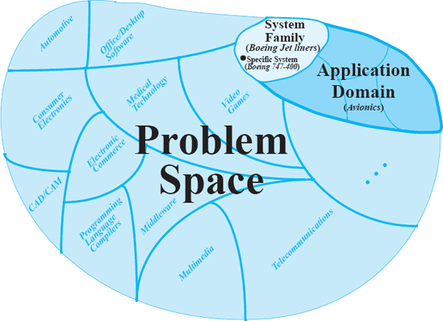
Figura 15-1. Engenheiros constroem sistemas dentro de muitos domínios problemáticos, que são divididos em subdomínios, que por sua vez são divididos em famílias.
No entanto, essas ferramentas e princípios básicos são apenas uma base rudimentar para a construção de sistemas complexos. Eles não tentam aproveitar as propriedades úteis de um determinado domínio problemático nem ajudam a identificar e explorar as semelhanças que provavelmente existem entre sistemas de uma determinada família. Seria muito difícil, arriscado e caro tentar construir todo sistema de software usando apenas essas ferramentas primitivas. Nos primeiros dias da computação, engenheiros de software eram obrigados a fazer exatamente isso. Eles tinham pouco ou nenhum conhecimento sobre construção de software, especialmente em domínios específicos, então tiveram que desenvolver sistemas de software a partir de "princípios fundamentais".
A situação hoje é bem diferente. Uma grande quantidade de conhecimento em engenharia de software foi adquirida por meio de ampla experiência (e fracassos custosos) em muitos domínios. Dentro desses domínios, muitas populações e linhas de produtos foram desenvolvidas e evoluídas. Ao aproveitar o conhecimento dessas experiências, os engenheiros podem construir sistemas subsequentes dentro do mesmo domínio ou família de forma mais rápida, econômica e confiável. Para usar nossa analogia anterior, embora a capacidade de construir uma televisão possa não se traduzir em capacidade de construir um avião, a capacidade de construir um avião transmite uma grande quantidade de informações sobre como construir outro.
Engenharia de software específica de domínio (DSSE) é o nome dado a uma abordagem de engenharia de software caracterizada pelo uso extensivo do conhecimento existente do domínio. O DSSE é uma estratégia poderosa por vários motivos:
Como detalharemos neste capítulo, a DSSE combina insights de três áreas principais:
Os respectivos papéis e relações entre essas áreas são representados na Figura 15-2, que fornece uma base conceitual para o restante deste capítulo. Ela nos permite definir, relacionar e explicar adequadamente dois aspectos principais do DSSE: arquiteturas de software específicas de domínio (DSSA) e famílias de produtos, também chamadas de linhas de produto (PL). Embora sejam intimamente relacionadas, essas duas áreas da engenharia de software receberam tratamentos majoritariamente separados na literatura.
Este capítulo apresenta e discute os conceitos de DSSE antecipados acima, com foco especial no papel da arquitetura de software na DSSE. Ao final do capítulo, o leitor entenderá melhor como o DSSE difere da engenharia de software baseada em arquitetura comum, seus benefícios, a relação entre DSSAs e linhas de produtos, e como aplicar os conceitos resultantes para capturar soluções arquitetônicas explícita e eficazmente que abrangem múltiplos sistemas em um domínio ou, mais restritamente, em uma família de sistemas.
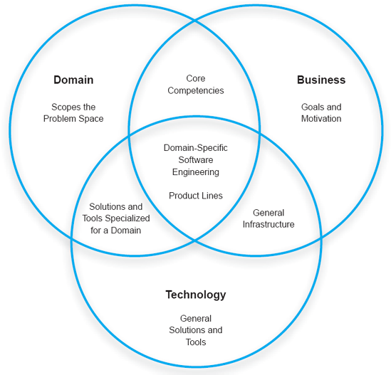
Figura 15-2. A engenharia de software específica por domínio exige que organizações e engenheiros aproveitem diferentes aspectos de três áreas inter-relacionadas: domínio, negócios e tecnologia.
Resumo deCapítulo 15
ENGENHARIA DE SOFTWARE ESPECÍFICA DE DOMÍNIO EM RESUMO
Antes de passarmos aos detalhes dos DSSAs e linhas de produtos, vamos fornecer um breve contexto sobre eles.
Problemas Semelhantes, Soluções Semelhantes
Para ilustrar nossa discussão, mostramos uma visão altamente simplificada do desenvolvimento de software tradicional na Figura 15-3: Uma equipe de engenheiros de software normalmente recebe uma descrição de um problema que deve resolver. Essa descrição pode ser detalhada ou superficial; pode ser escrito com precisão ou declarado verbalmente (e de forma ambígua) por um cliente humano ou usuário em potencial; A descrição pode ser relativamente completa ou pode surgir de forma incremental durante o processo de desenvolvimento. Em qualquer caso, a principal tarefa dos engenheiros de software é encontrar uma forma de pegar a descrição do problema, que existe no espaço do problema, e mapeá-la para um sistema de software, que existe no espaço de soluções. Fazer isso em geral é difícil porque os dois espaços geralmente são caracterizados por conceitos diferentes, com terminologias e propriedades distintas. Fazer isso também é difícil porque, em geral, muitas possibilidades para atender a um determinado requisito de software, desde a linguagem de programação em que o requisito será implementado, até as construções em nível de código usadas para realizar o requisito, passando pela plataforma de hardware em que será executado, até as diferentes formas de modularizar o sistema (incluindo optar por não modularizá-lo de forma alguma). e assim por diante. É em parte por isso que, historicamente, tem sido um desafio para os desenvolvedores garantir propriedades desejadas em sistemas de software: muitas opções sem uma indicação clara de qual opção funciona melhor e por quê.
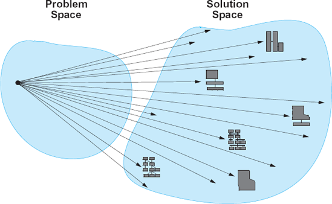
Figura 15-3. Uma visão deliberadamente simplificada do desenvolvimento tradicional de software: Qualquer problema de desenvolvimento de software pode ser resolvido de várias maneiras diferentes.
O desenvolvimento baseado em arquitetura de software resolve esse problema em parte elevando o discurso a um plano superior com menos opções: Quais são os principais componentes necessários para o sistema dado? Quais são as interações deles? Quais são as composições deles em configurações de sistema que resolvem efetivamente o problema em questão? A Figura 15-4 mostra essa abordagem para o desenvolvimento de sistemas. Novamente, a imagem é deliberadamente simplificada para ilustrar o ponto: um problema frequentemente terá um número mais restrito de soluções arquitetônicas de software que são conhecidas por serem eficazes para resolvê-lo. Por sua vez, cada uma dessas arquiteturas terá um número comparativamente menor de implementações possíveis (por razões já discutidas nos capítulos anteriores).
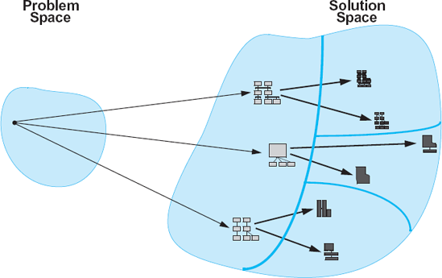
Figura 15-4. Uma visão deliberadamente simplificada do desenvolvimento de software baseado em arquitetura: Qualquer problema de desenvolvimento de software pode ser resolvido por um número finito de arquiteturas de software.
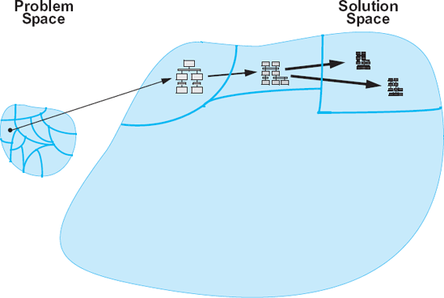
Figura 15-5. Uma visão deliberadamente simplificada da DSSE: Alguns problemas de desenvolvimento de software pertencem a classes específicas de problemas para os quais existem soluções arquitetônicas e de implementação (parciais) conhecidas. Essas arquiteturas parciais são então adaptadas ao problema específico em questão e implementadas usando técnicas bem compreendidas.
Ainda assim, a tarefa de selecionar a arquitetura de software apropriada e implementá-la está longe de ser trivial. De muitas maneiras, esse problema apenas interpõe um nível adicional de indireção ao problema que engenheiros de software enfrentaram no passado. É aqui que a DSSE adota uma abordagem marcadamente diferente, como mostrado na Figura 15-5: em vez de atacar principalmente o espaço de solução, a DSSE é guiada pela observação de que certos problemas pertencem a classes ou domínios específicos e bem definidos de problemas (lembre-se da Figura 15-1). Ou seja, esses problemas compartilham várias características que permitem aos engenheiros atacá-los de maneiras semelhantes. Dentro de cada domínio, soluções arquitetônicas eficazes (parciais) podem ser identificadas e documentadas. Essas soluções são conhecidas como arquiteturas de referência. Em vez de desenvolver novas arquiteturas para cada novo problema no domínio, as soluções podem ser derivadas adaptando a arquitetura de referência. Além disso, as semelhanças entre os diferentes problemas do mesmo domínio permitem que engenheiros desenvolvam intuições sólidas sobre um sistema antes de ele ser construído, avaliem suas soluções de maneira fundamentada e frequentemente rigorosa, e utilizem um grande número de ferramentas poderosas para gerar e avaliar implementações de sistemas. Todas as atividades, técnicas e ferramentas resultantes são auxiliadas por seu foco e escopo relativamente restritos e bem definidos.
Vendo o DSSE através do prisma do domínio, dos negócios e da tecnologia
Como argumentado na introdução do capítulo e representado na Figura 15-2, três preocupações principais da DSSE são domínio, negócios e tecnologia (Medvidović, Dashofy e Taylor 2007). A importância de cada uma das três empresas, e sua composição exata, variará entre organizações e projetos. Essas diferenças têm implicações claras nas organizações e projetos envolvidos, bem como nas partes interessadas, nos processos e, em última análise, nos produtos. Discutimos cada área do diagrama da Figura 15-2 com mais detalhes abaixo.
Apresentamos os diversos conceitos e interações que compõem a engenharia de software específica de cada domínio. Agora, examinaremos como a arquitetura de software pode ser aproveitada e especializada para aplicação no contexto do DSSE. Estudaremos duas áreas-chave arquitetonicamente relevantes da DSSE: arquiteturas de software específicas de domínio e linhas de produtos.
ARQUITETURA DE SOFTWARE ESPECÍFICA DE DOMÍNIO
Uma arquitetura de software específica para domínio (Tracz 1995; Coglianese, Smith e Tracz 1992; Tracz 1994; Tracz, Coglianese e Young 1993) compreende um corpo codificado de conhecimento sobre desenvolvimento de software em um domínio de aplicação específico. Barbara Hayes-Roth (Hayes-Roth et al. 1995) fornece uma definição operacional útil de uma arquitetura de software específica para domínio:
Definição. Uma arquitetura de software específica de domínio (DSSA) compreende:
A Figura 15-6 oferece uma visão geral de um processo de desenvolvimento de software centrado em DSSA. Além das atividades usuais de engenharia de aplicações em que os desenvolvedores atuam, as DSSAs envolvem diversas atividades de engenharia de domínio. Essas atividades resultam em modelos das entidades relevantes do domínio de aplicação, suas características e seus relacionamentos; definições da terminologia chave; requisitos canônicos; soluções em nível de design e implementação que sejam reutilizáveis em vários sistemas do domínio; e suporte de ferramentas especializado para auxiliar o desenvolvimento dentro do domínio.
Esse conjunto de ativos não é de graça. Em vez disso, ela é construída ao longo do tempo, à medida que os engenheiros acumulam experiência (tanto boa quanto ruim) construindo sistemas individuais dentro de um domínio e tentam generalizar essa experiência para uso em sistemas futuros. No restante desta seção, discutiremos as características dos domínios de aplicação e modelos de domínio, os requisitos que permanecem estáveis e aqueles que mudam dentro de um domínio, além das estratégias de solução correspondentes. Ilustraremos a discussão com um exemplo de DSSA derivado das diferentes arquiteturas de Lunar Lander discutidas nos capítulos anteriores.
Conhecimento do Domínio
Como discutimos, uma das principais preocupações da engenharia de software específica de domínio é o próprio domínio do problema. Para explorar as propriedades do domínio, suas características principais devem ser capturadas em um modelo de domínio. Simplificando, um modelo de domínio (Batory, McAllester et al. 1995) é uma representação do que acontece em um domínio de aplicação. Isso inclui as funções que estão sendo executadas, os objetos (também chamados de entidades) que executam as funções e aqueles sobre os quais as funções são realizadas, além dos dados e informações que fluem entre as entidades e/ou funções. No jargão da seção anterior, um modelo de domínio lida com o espaço do problema. Portanto, os termos acima são usados em seu sentido comum (por exemplo, funcionam como uma operação realizada sobre ou por uma entidade "viva" no domínio), e não no sentido que engenheiros de software normalmente atribuem a eles (por exemplo, funcionam como um método que retorna um valor em um programa C++).
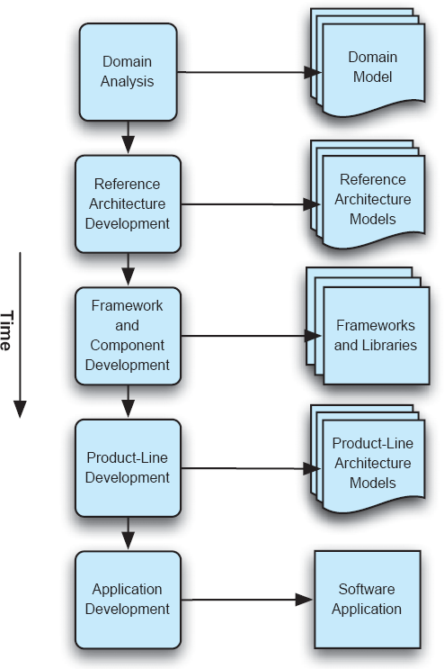
Figura 15-6. Visão geral do processo DSSA e artefatos gerenciados.
Se tomarmos a aviônica como domínio de exemplo, as funções de interesse seriam decolagem, pouso, taxiamento, voo, arfagem, rolagem, guinada, abastecimento, reabastecimento (possivelmente em voo), manutenção e assim por diante. Dados e informações que circulavam entre essas funções seriam vários comandos de piloto, sinais de instrumentos, avisos, mensagens de verificação de status, taxas de consumo de combustível, dados coletados para as caixas-preta, e assim por diante. As entidades no domínio incluiriam os instrumentos de voo, o leme e os flaps das asas da aeronave, os tanques de combustível, o combustível transferido para os tanques durante o abastecimento e dos tanques para o motor durante o voo, os fluidos hidráulicos usados para controlar a aeronave, e assim por diante. É esse tipo de terminologia, entidades, suas relações e operações sobre elas que entram na construção de um modelo de domínio.
Note que nada na descrição do domínio acima (muito breve e informal) desmente o fato de que uma parte significativa das funções, dados e entidades de um determinado sistema de aviônicos eventualmente será reificada em software. Lembre-se, o modelo de domínio caracteriza o espaço do problema. O objetivo fundamental de um modelo de domínio é duplo:
Por exemplo, guinada é um termo usado em aviônica para se referir à rotação de uma aeronave em torno de um eixo perpendicular ao plano horizontal da aeronave (ou seja, suas asas) e que passa pelo centro de gravidade da aeronave. Claro, também teríamos que definir o que é um centro de gravidade, e então quaisquer outros termos necessários para esclarecer sua definição, e assim por diante, até que todos os termos relacionados à guinada sejam explicados usando a terminologia específica do domínio apropriado. A guinada é produzida movendo o leme da aeronave.
Note que, embora guinada seja um termo amplamente conhecido devido à popularidade e ubiquidade do voo no mundo atual, nada realmente nos impede de usar um termo diferente para descrever esse mesmo conceito em outro domínio problemático. Por exemplo, poderíamos chamar o movimento análogo de uma tela de televisão de tela plana de rotação esquerda-direita. De forma semelhante, podemos usar esse mesmo termo para descrever um conceito diferente em outro domínio problemático (embora, neste caso, correríamos o risco de confundir as questões, dado o amplo familiarismo com esse termo em particular e seu significado definido acima).
Um modelo de domínio é um produto da análise de contexto e da análise de domínio. Análise de contexto é a atividade pela qual os limites de um domínio são definidos, e as relações das entidades dentro do domínio com aquelas externas são identificadas e capturadas. Essa é uma atividade importante que às vezes é negligenciada, já que a DSSE foca principalmente em coisas dentro de um domínio, em vez dos limites do domínio ou da relação entre coisas dentro e fora do domínio.
Análise de domínio pode ser definida como a atividade de identificar, capturar e organizar os ativos de domínio, ou seja, os objetos, operações e dados recorrentes em uma classe de sistemas semelhantes dentro de um domínio de aplicação. A análise de domínio resulta em uma descrição dos ativos do domínio usando um vocabulário padronizado. Seu objetivo é estabelecer a base para tornar os ativos utilizáveis e reutilizáveis ao resolver novos problemas dentro do domínio. Por exemplo, guinada é um recurso utilizável se for descrita de forma a permitir que um engenheiro de aviônica (software) a encontre facilmente e compreenda seu significado de forma inequívoca sempre que necessário. A guinada é reutilizável se descrever a operação de todas, ou pelo menos a maioria, das aeronaves dentro do domínio (por exemplo, grandes aviões de passageiros). Note que esse nível de reutilização, embora claramente importante para múltiplos projetos conduzidos por uma organização de engenharia, incluindo suas divisões de engenharia de software, tem pouco ou nada a ver com código.
Um modelo de domínio geralmente compreende várias informações que, juntas, apresentam uma imagem útil dos ativos do domínio e suas inter-relações. Esses modelos podem ser agrupados em quatro categorias:
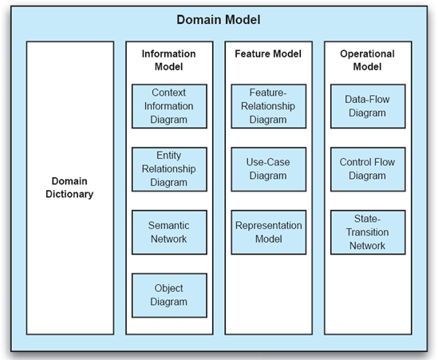
Figura 15-7. Elementos de um modelo de domínio.
Os diferentes modelos e uma ampla seção transversal dos seus tipos de diagramas associados são mostrados nas Figuras 15-7. Agora discutimos cada um deles com mais detalhes.
Dicionário de Domínio
Um dicionário de domínio representa a identificação e definições dos termos usados no modelo de domínio. Esses termos podem ser amplamente usados e compreendidos fora do domínio, caso em que o objetivo de incluí-los no dicionário de domínio pode ser defini-los cuidadosamente e evitar quaisquer inconsistências e ambiguidades em seu uso. Por outro lado, os termos podem ser especializados ou até inventados com o único propósito de fomentar a comunicação e o entendimento dos stakeholders humanos dentro do domínio. O dicionário de domínio deve ser atualizado ao longo do tempo com nova terminologia e com novas compreensões ou compreensões mais claras dos conceitos existentes. Um dicionário de domínio também se torna uma ferramenta indispensável para treinar novos engenheiros que atuam no domínio da aplicação. As figuras 15-8 mostram um dicionário parcial de domínio de um hipotético DSSA de módulo lunar.
Modelo de Informação
Um modelo de informação é, na verdade, uma coleção de múltiplos modelos que podem ser usados em diferentes organizações e diferentes DSSAs. O modelo de informação é resultado da análise de contexto e da análise de informação. A análise de contexto resulta na definição dos limites do domínio e preserva informações que poderiam estar implícitas e dispersas entre muitos sistemas diferentes e seus artefatos. A análise de informação então toma o resultado da análise de contexto (isto é, os contornos do domínio) e representa explicitamente o conhecimento intradomínio em termos de entidades do domínio e suas relações.
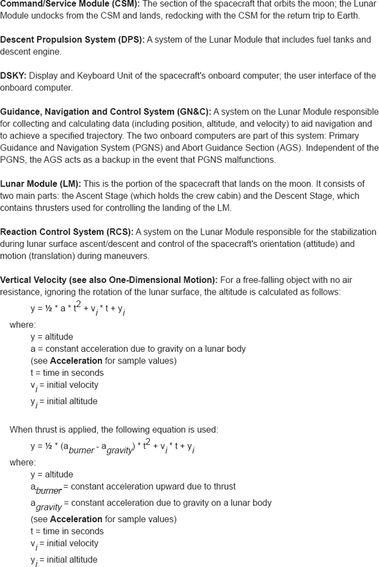
Figura 15-8. Dicionário parcial de domínio para um DSSA de módulo lunar.
O modelo de informação garante que a DSSA empregue abstrações e decomposições de dados apropriadas. Diferentes elementos do modelo de informação são usados por pelo menos três tipos de partes interessadas.
Um modelo de informação geralmente consiste em um ou mais dos tipos de diagramas abaixo.
Diagrama de Informações de Contexto. Este diagrama captura o fluxo de dados de alto nível entre as principais entidades do sistema, sua relação com as entidades externas ao sistema (bem como fora do domínio), bem como quaisquer dados que se assumam provenientes de fontes externas. Por exemplo, no DSSA do módulo lunar, as informações trocadas entre os sensores, atuadores e computadores da espaçonave fazem parte do diagrama de informação de contexto. Ao mesmo tempo, a topologia da superfície da lua (ou do planeta) onde a espaçonave está pousando é considerada fora do domínio. Um exemplo de diagrama de informação de contexto do DSSA do módulo lunar é mostrado na Figura 15-9.
Diagrama de Entidade/Relação (ER). Este diagrama captura as relações de agregação ("a-part-of") e generalização ("is-a") entre as entidades dentro do domínio. Por exemplo, no DSSA do módulo lunar, o nível de combustível é "parte" da entidade da espaçonave, enquanto um determinado propulsor "é" um atuador do módulo lunar. Um diagrama ER de exemplo do DSSA do módulo lunar é mostrado na Figura 15-10.
Diagrama do objeto. Esse diagrama identifica os objetos no domínio da aplicação em vez do software. Em outras palavras, o diagrama de objetos descreve entidades no espaço do problema; Os componentes do espaço de solução usados para realizar as entidades do espaço de problema serão capturados na arquitetura de referência, discutida abaixo. O diagrama de objetos captura os atributos e propriedades de cada objeto, bem como suas interdependências e interações com outros objetos no domínio. Um diagrama de exemplo de objeto do Lunar Lander DSSA é mostrado nas Figuras 15-11.
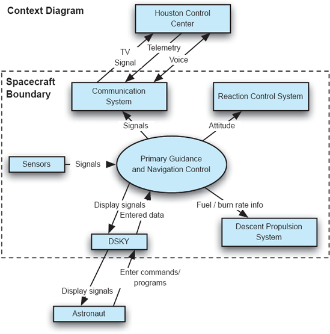
Figura 15-9. Exemplo de diagrama de informação de contexto do DSSA do módulo lunar (DSSA).
Modelo de Característica
O modelo de características é, na verdade, uma coleção de vários modelos. Um modelo de características resulta da análise de características. O objetivo da análise de características é capturar e organizar as compreensões e expectativas do cliente ou usuário final sobre as capacidades (compartilhadas) gerais das aplicações em um determinado domínio. O modelo de funcionalidades é considerado o principal meio de comunicação entre os clientes e os desenvolvedores de novas aplicações. O modelo de características delimita explicitamente as semelhanças e diferenças entre os sistemas do domínio. Exemplos de recursos incluem descrições de funções, descrições dos padrões de missão e uso, requisitos de desempenho, precisão, sincronização de tempo e assim por diante (Kang et al. 1990). Tais recursos são significativos para os usuários e podem auxiliar os engenheiros na elaboração do DSSA que fornecerá as capacidades desejadas.
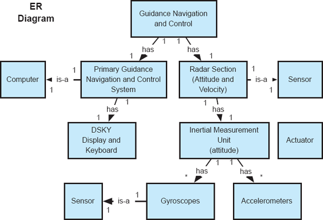
Figura 15-10. Exemplo de diagrama ER do Lunar Lander DSSA.
As funcionalidades podem ser definidas como obrigatórias, opcionais ou variantes. Espera-se que recursos obrigatórios voltem a acontecer em todos os sistemas do domínio. No caso do sistema Lunar Lander, o Calcular a Altitude é um recurso obrigatório: qualquer implementação do Lunar Lander deve ser capaz de calcular continuamente a altitude da espaçonave. Recursos opcionais são aqueles identificados como úteis para um subconjunto dos sistemas dentro da DSSA dada. Por exemplo, Get Burn Rate é um recurso opcional: algumas versões do Lunar Lander podem pedir ao usuário do sistema a taxa de consumo de combustível preferida. Por fim, características variantes existem na maioria (ou em todos) os sistemas dentro de um DSSA, mas diferem dependendo dos valores de um ou mais parâmetros. Por exemplo, Compute Velocity é uma característica variante dentro do Lunar Lander DSSA, cuja realização exata pode depender do tamanho e massa da espaçonave, bem como do tamanho, massa e atmosfera do corpo celeste sobre o qual a espaçonave está pousando.
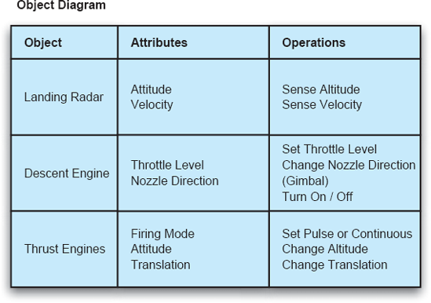
Figuras 15-11. Exemplo de diagrama de objetos do Lunar Lander DSSA.
O modelo de características também abrange vários tipos de diagramas, que são discutidos abaixo. Assim como no modelo de informação, os arquitetos que desenvolvem o modelo de características para um DSSA específico decidiriam qual desses diagramas melhor atende às suas necessidades. Eles também podem escolher outros tipos de diagramas semelhantes. Por exemplo, a abordagem de Análise de Domínio Orientada a Características () do Instituto de Engenharia de Software defende o uso de redes semânticas (Kang et al. 1990) na modelagem de características.
Diagrama de Relação de Características.[20]Este diagrama descreve a missão geral ou os padrões de uso de uma aplicação. Ela captura as principais características e sua decomposição em subcaracterísticas. Esse modelo também pode incluir quaisquer requisitos de qualidade associados a características individuais, como confiabilidade, segurança, desempenho, precisão, requisitos em tempo real, sincronização, e assim por diante (recallCapítulos 12e13). Um diagrama de relacionamento de características de exemplo do DSSA do módulo lunar é mostrado emFiguras 15-12.
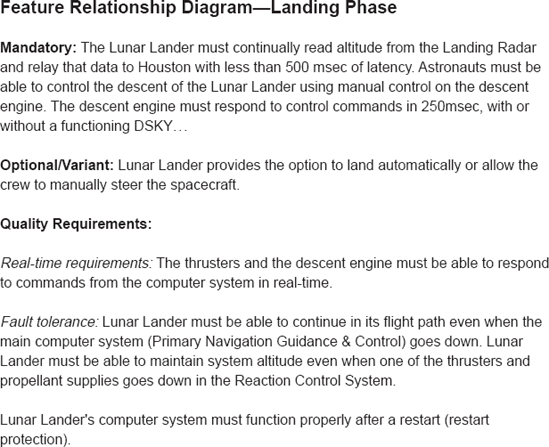
Figuras 15-12. Exemplo de diagrama de relações de características do DSSA do módulo lunar (DSSA).
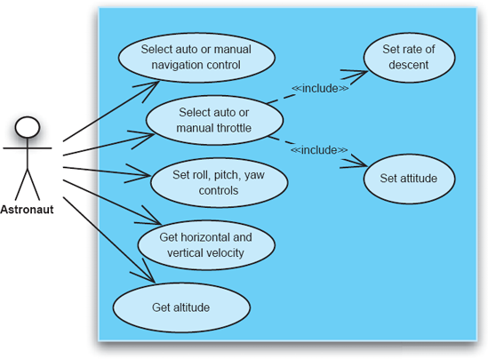
Figuras 15-13. Exemplo de diagrama de casos de uso do Lunar Lander DSSA.
Diagrama de Casos de Uso. Este diagrama captura os cenários de uso no sistema. Casos de uso tornaram-se prevalentes com a introdução da Linguagem Unificada de Modelagem (vejaCapítulos 6e16). Diagramas de casos de uso são obtidos de especialistas do domínio, clientes de sistemas e usuários do sistema, e abrangem a forma como se espera que um recurso seja utilizado, bem como o fluxo de controle e de dados entre múltiplos recursos. Um diagrama de casos de uso exemplo do DSSA do módulo lunar é mostrado emFiguras 15-13.
Modelo de Representação. Este diagrama descreve como a informação é disponibilizada a um usuário humano. Em outras palavras, o modelo de representação detalha quais são as interfaces de usuário apropriadas para os sistemas dentro da DSSA. Esse modelo também captura as informações produzidas para outra aplicação: Que tipos de capacidades de entrada e saída estão disponíveis e qual é o formato comum esperado para a informação trocada? Um exemplo de modelo de representação parcial do Lunar Lander DSSA é mostrado nas Figuras 15-14.
Modelo Operacional
O modelo operacional é a base sobre a qual o projetista de software inicia o processo de compreensão (1) como fornecer as funcionalidades para um sistema específico em um domínio e (2) como utilizar as entidades identificadas no modelo de domínio resultante. O modelo operacional identifica as operações-chave (isto é, funções) que ocorrem dentro de um domínio, os dados trocados entre essas operações, bem como as sequências mais comuns dessas operações. Em outras palavras, o modelo operacional representa como as aplicações dentro de um domínio funcionam.
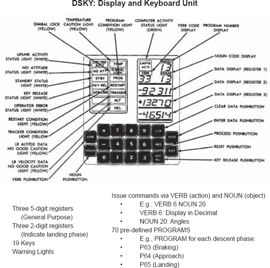
Figuras 15-14. Exemplo de modelo de representação do Lunar Lander DSSA. Diagrama original do DSKY do Manual de Operações Apollo, Módulo Lunar LM5 e Subsequente, Volume 1: Dados de Subsistemas (LMA790-3-LM5).
O modelo operacional é resultado da análise operacional, que identifica as semelhanças, bem como as diferenças no fluxo de controle e fluxo de dados entre as entidades de um domínio. As entidades de domínio identificadas nos modelos de informação e características, discutidos acima, formam a base para o modelo operacional: o modelo de informação captura os dados trocados pelas operações, enquanto o modelo de características captura as próprias operações. O controle e o fluxo de dados de cada aplicação individual dentro do DSSA podem ser derivados do modelo operacional.
Três tipos representativos de diagramas usados no modelo operacional são discutidos abaixo.
Diagrama de Fluxo de Dados. Este diagrama foca explicitamente nos dados trocados dentro do sistema, sem noção de controle. Um exemplo de diagrama de fluxo de dados do DSSA do módulo lunar é mostrado nas Figuras 15-15.
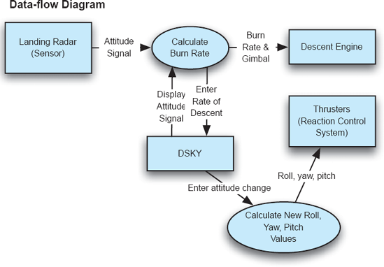
Figuras 15-15. Exemplo de diagrama de fluxo de dados do DSSA do módulo lunar (DSSA).
Diagramas de Controle-Fluxo. Este diagrama foca na troca de controle dentro do sistema, sem considerar os dados. Um exemplo de diagrama de controle-fluxo do DSSA do módulo lunar é mostrado na Figura 15-16.
Diagrama de Transição de Estado. Este diagrama modela e relaciona os diferentes estados que as entidades do domínio irão entrar, eventos que resultarão em transições entre estados, bem como ações que podem resultar desses eventos. Um exemplo de diagrama de transição de estado do DSSA do módulo lunar é mostrado nas Figuras 15-17.
Requisitos Canônicos
Um elemento crítico de um DSSA são os requisitos canônicos ou de referência. Esses são requisitos que se aplicam a todo o domínio capturado por uma DSSA. Esses requisitos de referência serão incompletos porque precisam ser gerais o suficiente para capturar as variações que ocorrem entre sistemas individuais e porque sistemas individuais também introduzirão seus próprios requisitos. No entanto, os requisitos de referência facilitam diretamente o mapeamento dos requisitos de cada sistema dentro de um determinado domínio para a solução canônica específica de domínio (discutida na próxima seção).
Semelhante aos requisitos de qualquer sistema de software, o ponto de partida para os requisitos de referência é a declaração de necessidades do cliente. Em uma DSSA, essa afirmação é geral o suficiente para se aplicar a qualquer sistema do domínio. Uma DSSA é um exercício de generalização a partir de experiências específicas, então a afirmação pode emergir ao longo do tempo a partir de afirmações semelhantes que eram específicas para sistemas individuais construídos anteriormente dentro do domínio. A declaração de necessidades do cliente identifica os requisitos funcionais para o DSSA em um alto nível de abstração. Geralmente é informal, ambíguo e incompleto. É um ponto de partida para derivar requisitos (referência), mas não é o mesmo que requisitos de referência. Como exemplo, a Figura 15-18 mostra uma declaração parcial de necessidades do cliente para o Lunar Lander DSSA.
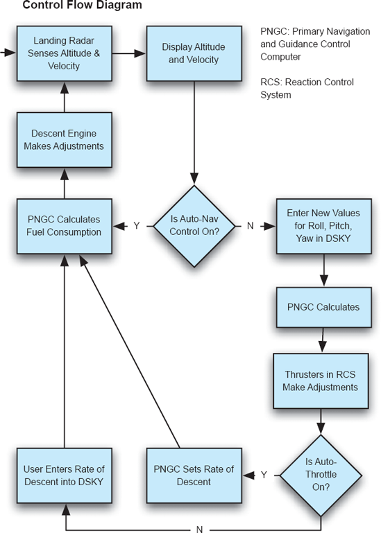
Figuras 15-16. Exemplo de diagrama de controle e fluxo do DSSA do Lunar Lander.
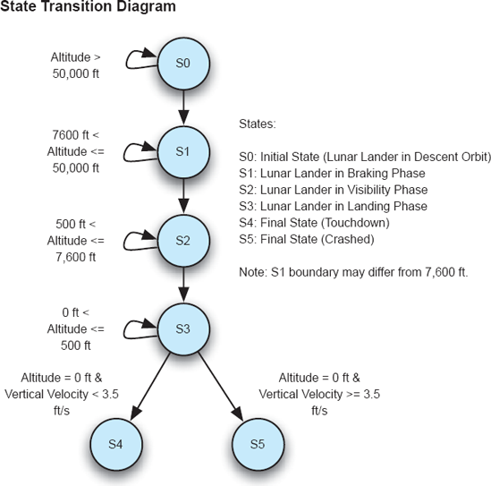
Figuras 15-17. Exemplo de diagrama de transição de estado do Lunar Lander DSSA.
Os requisitos de referência são então derivados da declaração de necessidades do cliente, bem como dos requisitos dos sistemas legados individuais dentro do domínio. Os requisitos de referência contêm as características definidoras do espaço do problema. Esses são os requisitos funcionais. Os requisitos de referência também contêm características limitantes (ou seja, restrições) no espaço de solução. São esses os requisitos não funcionais (como segurança, desempenho, confiabilidade), requisitos de design (como estilo arquitetônico, estilo de interface do usuário) e requisitos de implementação (como plataforma de hardware, linguagem de programação).
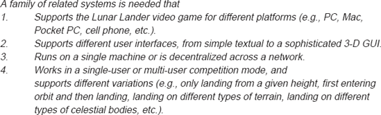
Figuras 15-18. Exemplo de declaração de necessidades do cliente do Lunar Lander DSSA.
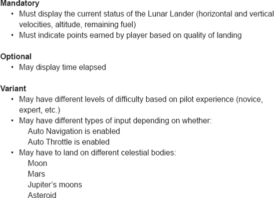
Figuras 15-19. Requisitos de referência de exemplo do Lunar Lander DSSA.
Semelhante ao modelo de características discutido acima, os requisitos de referência devem distinguir entre três tipos de requisitos:
Em geral, cada requisito — seja funcional, não funcional, de design ou implementação — pode ser de qualquer um dos três tipos (obrigatório, opcional ou variável). Fornecemos exemplos de requisitos obrigatórios, opcionais e variáveis para o Lunar Lander na Figura 15-19.
Estratégias Canônicas de Solução – Arquiteturas de Referência
Quando objetivos de negócios e tecnologia são aplicados a um problema dentro de um domínio, surgem soluções. Uma única arquitetura de produto representa uma única solução. No entanto, como já abordamos extensamente, ao atacar problemas no mesmo domínio com objetivos de negócios semelhantes em mente e utilizar tecnologia semelhante, semelhanças surgem nas arquiteturas de solução. Essas semelhanças podem ser capturadas em umArquitetura de referência. Aqui, repetimos a definição encontrada emCapítulo 3.
Definição. Arquitetura de referência é o conjunto de decisões principais de projeto que são simultaneamente aplicáveis a múltiplos sistemas relacionados, tipicamente dentro de um domínio de aplicação, com pontos de variação explicitamente definidos.
Como conjuntos de decisões principais de design, arquiteturas de referência são elas mesmas arquiteturas. No entanto, eles são genéricos ou variados de modo que se aplicam a múltiplos sistemas simultaneamente — no contexto dos termos que usamos neste capítulo, para uma população ou linha de produtos de sistemas. Pontos onde a arquitetura pode variar de membro da família para membro da família são explicitamente definidos como parte da arquitetura de referência.
Existem muitos tipos diferentes de arquiteturas de referência; Essa definição é intencionalmente ampla. Eles diferem em como expressam as semelhanças e os pontos de variação em uma população ou linha de produtos. Três classes de arquiteturas de referência são:
Desenvolvendo uma Arquitetura de Referência
Desenvolver uma arquitetura de referência é uma decisão séria, pois será a base orientadora para vários produtos futuros. Determinar quando, como e por que desenvolver uma arquitetura de referência é fundamental para o sucesso.
Quando desenvolver uma arquitetura de referência. Uma pergunta óbvia que surge na DSSE é: "Quando é o momento certo para desenvolver uma arquitetura de referência?" Escolher um momento apropriado é fundamental porque uma arquitetura de referência limita e vincula todas as soluções do domínio. O desenvolvimento prematuro de uma arquitetura de referência pode ser desastroso se a arquitetura não for validada ou se a compreensão do domínio pelos stakeholders for muito incompleta: em vez de afetar apenas um produto, um erro cometido em uma arquitetura de referência muito inicial se propagará para muitos produtos e aumentará enormemente os custos desse erro. Por outro lado, desenvolver uma arquitetura de referência tarde demais pode ser igualmente custoso: se muitas arquiteturas de soluções diversas já foram desenvolvidas em um domínio, haverá pouca oportunidade de adaptar essas arquiteturas existentes para se encaixarem na arquitetura de referência (elas se tornarão "sistemas legados"), e, portanto, limitarão substancialmente os benefícios de reutilização.
Uma boa tática que mitiga algum risco é adotar uma abordagem incremental em relação à arquitetura de referência. A arquitetura de referência ainda deve ser desenvolvida pensando em toda a família de produtos — se isso não for feito, pode assumir as características de um único produto e depois precisar ser significativamente adaptada para incorporar toda a família. Se, como frequentemente acontece, vários produtos já foram desenvolvidos e estão sendo adaptados para usar uma arquitetura de referência, geralmente é mais fácil adaptar um ou dois produtos por vez para usar a arquitetura de referência do que tentar unificar toda a família de uma vez. Começar pelos produtos cuja arquitetura existente está mais próxima da arquitetura de referência de alvo geralmente é uma boa ideia. Isso permite que a arquitetura de referência seja avaliada e refinada sem afetar muitos produtos simultaneamente.
Escolhendo a forma de uma arquitetura de referência. Decidir como capturar uma arquitetura de referência depende do domínio, dos stakeholders e das necessidades de negócios subjacentes a(s) organização(ões) envolvida(s). Técnicas de modelagem mais precisas (como o uso de pontos de variação explícitos) facilitam a detecção e prevenção de fenômenos como deriva e erosão arquitetônica, mas também podem limitar a liberdade criativa e as oportunidades de inovação.
Uma arquitetura completa de produto único oferece menos orientação aos arquitetos sobre como desenvolvê-la em uma família de produtos (a menos que os produtos dessa família tenham arquiteturas muito próximas da arquitetura de referência). Se esse formulário for escolhido para a arquitetura de referência, também deve ser fornecida documentação explícita do estilo subjacente e do que pode ou não mudar. Também pode ser útil incluir vários exemplos de arquiteturas completas de produtos em uma família para ilustrar isso.
Arquiteturas ininvariantes incompletas têm a vantagem de dizer diretamente aos arquitetos o que deve estar presente na arquitetura de um membro da família. No entanto, eles podem não ter detalhes sobre como realmente concluir o processo de elaboração. Novamente, documentação importante sobre o estilo e como a elaboração deve ser feita é fundamental. Outra alternativa (um pouco mais cara) é combinar isso com arquiteturas completas de produto: isto é, como parte da arquitetura de referência, fornecer tanto a arquitetura invariante incompleta quanto uma ou mais arquiteturas de produto elaboradas (mesmo que sejam apenas amostras ou arquiteturas de demonstração), pois podem servir como exemplos para futuras elaborações.
Arquiteturas invariantes com pontos de variação explícitos fornecem a maior direção aos arquitetos; elas não apenas dizem exatamente o que deve estar presente na arquitetura de cada membro da família, mas também definem efetivamente todos os membros da família. Uma arquitetura de referência nessa forma pode ter um grande número de pontos de variação, e a soma de todas as alternativas possíveis superará em muito as necessidades de negócios da organização em desenvolvimento. Por exemplo, imagine uma arquitetura de referência que define oito recursos opcionais que podem ser incluídos ou não. Essa arquitetura de referência define uma família de 28=256 arquiteturas possíveis. Nem todas essas arquiteturas serão viáveis (talvez devido a conflitos de características) ou desejáveis de produzir (devido às condições de mercado). Essas arquiteturas de referência facilitam a seleção de membros da família, mas limitam o escopo dos produtos que podem estar na família.
Para um domínio complexo, uma arquitetura de referência será extremamente detalhada, com múltiplas visões coordenadas, documentação extensa capturando os invariantes e pontos de variação, e orientações sobre como refinar a arquitetura de referência em uma aplicação concreta. A justificativa para as várias decisões incorporadas na arquitetura também seria incluída. Uma visão estrutural como a mostrada na Figura 15-20 pode fazer parte de tal arquitetura de referência. Essa representação sozinha não é suficiente para interpretar sua intenção; Também é necessário documentar de apoio. Por exemplo, pode ser que os componentes apresentados sejam destinados a ser os únicos componentes do sistema, ou os implementadores podem ser aconselhados a adicionar componentes adicionais conforme necessário. Certos pontos de variação são óbvios: se um satélite relé é usado ou não, o tipo de middleware, a implementação do enlace espacial, os outros sensores no módulo de pouso, e assim por diante. A interpretação pretendida de todos esses elementos deve estar contida em documentação auxiliar; Isso é típico de uma arquitetura de referência.
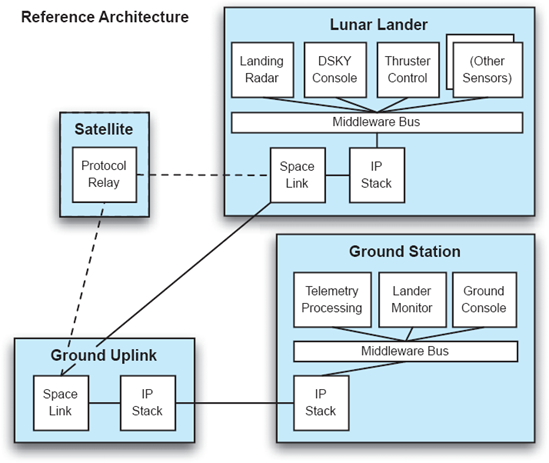
Figuras 15-20. Exemplo de vista estrutural de arquitetura de referência para um sistema de módulo lunar.
Linhas de Produtos e Arquitetura
Existem muitas diferenças significativas entre projetar uma arquitetura de produto único e uma arquitetura de referência; A principal delas é que uma arquitetura de referência deve servir de base para muitos produtos diferentes simultaneamente. Isso introduz uma série de novas questões: não apenas a arquitetura deve ser suficiente para uma única solução, mas deve ser desenvolvida, visualizada e avaliada em termos de um grande número de soluções potenciais (muitas das quais talvez nunca sejam realizadas).
É aqui que as tecnologias e técnicas desenvolvidas na comunidade de arquitetura de linha de produtos são aplicáveis. Arquiteturas de linha de produto oferecem às partes interessadas ferramentas para diversificar uma arquitetura de produto comum em um artefato adequado para descrever muitos produtos semelhantes/relacionados: uma linha de produtos. As técnicas apresentadas aqui permitem que as partes interessadas desenvolvam arquiteturas multi-produto sem perder os benefícios que identificamos no caso de produto único: modelos explícitos, visualização, analisabilidade, entre outros.
As linhas de produtos são uma das potenciais "balas de prata" da arquitetura de software — uma técnica que tem potencial para reduzir significativamente custos e aumentar a qualidade do software. O poder das linhas de produtos vem diretamente do reuso, especificamente do reuso de:
Conceitos de Linha de Produto
Aqui, apresentaremos diferentes noções de linhas de produtos e como elas são desenvolvidas e definidas, assim como elementos que compõem uma linha de produtos.
Linhas de Produtos Empresariais
Uma linha de produtos empresariais é um conjunto de produtos ligados para alcançar um propósito comercial/financeiro, como aumentar as vendas agrupando produtos. Esses produtos não precisam necessariamente ter semelhanças do ponto de vista da engenharia — não é incomum que uma empresa que acabou de adquirir novas subsidiárias coloque todos os novos produtos em uma única linha para comercializá-los melhor juntos.
Os negócios vão para onde o dinheiro flui
Em um negócio baseado em vendas de produtos, há uma diferença entre despesa e receita. O dinheiro é gasto durante a criação do produto, mas a renda só começa a chegar quando o produto está disponível no mercado. Essa situação é representada no gráfico a seguir, com a área sombreada representando o investimento inicial de capital necessário para o desenvolvimento do produto.
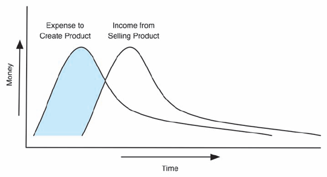
Se práticas tradicionais de desenvolvimento forem usadas, produtos adicionais terão curvas de despesa/renda semelhantes, como as seguintes:
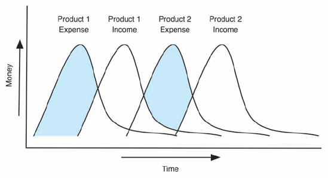
O uso de linhas de produtos, no entanto, reduz o custo de desenvolvimento e o tempo para criar um novo produto dentro da linha. Ao fazer isso, a receita adicional pode chegar mais cedo, reduzindo o efeito das despesas incorridas, como assim:
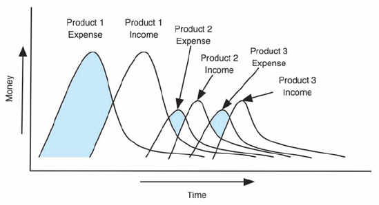
Note que as áreas sombreadas (quando as despesas excedem a receita) são muito mais limitadas quando as linhas de produtos são usadas.
Linhas de Produtos de Engenharia
Produtos de uma linha de produtos de engenharia são ligados por semelhanças na forma como são projetados ou construídos. Frequentemente, uma linha de produtos será tanto de negócios quanto de engenharia, mas isso nem sempre é o caso. Por exemplo, um fabricante de automóveis, como a Ford, construirá vários carros com a mesma plataforma de engenharia, mas os comercializará sob marcas diferentes, como Lincoln, Mercury e Mazda. Linhas de produtos de engenharia frequentemente compartilham partes significativas de sua arquitetura, e os produtos dentro delas podem estar todos em conformidade com uma DSSA mais ampla. As linhas de produtos discutidas no restante deste capítulo são linhas de produtos de engenharia; no entanto, a Seção 15.2.10 discute estratégias para unificar produtos díspares (talvez aqueles de uma linha de produtos empresariais) em uma linha de produtos de engenharia.
Especificando a Arquitetura de uma Linha de Produtos
As arquiteturas das linhas de produtos são um pouco diferentes das arquiteturas de referência em um DSSA. Em geral, as arquiteturas de linha de produto capturam as arquiteturas completas de múltiplos produtos relacionados simultaneamente. Por outro lado, arquiteturas de referência podem ser incompletas ou parciais. Eles podem, por exemplo, especificar a arquitetura de um único produto com orientações vagas sobre como adaptá-lo a outros contextos. Eles também podem especificar apenas partes invariantes de uma arquitetura e deixar o restante para os desenvolvedores da solução.
As arquiteturas de linha de produto diferem das arquiteturas de referência em dois aspectos. A primeira diferença é de escopo: em vez de tentar descrever as arquiteturas de muitas soluções (potencialmente diversas) dentro de um domínio, as arquiteturas de linha de produto focam em um conjunto específico e explícito de produtos relacionados, frequentemente desenvolvidos por uma única organização. A segunda diferença é a completude: arquiteturas de linha de produto geralmente capturam múltiplas arquiteturas de produto completas em vez de deixar partes indefinidas.
Lembre-se de nossa caracterização da arquitetura como o conjunto das principais decisões de projeto sobre um sistema. Uma arquitetura de linha de produto pode ser definida de forma semelhante: uma arquitetura de linha de produtos captura simultaneamente as principais decisões de design de muitos produtos relacionados. Algumas dessas decisões de design serão comuns a todos os produtos, outras serão comuns a um subconjunto dos produtos, e algumas serão únicas para cada produto.
As figuras 15-21 mostram uma arquitetura de linha de produto com dois produtos conceitualizados como um diagrama de Venn. O grande círculo central representa as decisões de design comuns a todos os produtos da linha de produtos. A forma "A" representa as decisões que são exclusivas do Produto A. A forma "B" representa as decisões que são únicas do produto B. A Figura 15-21(a) mostra os três grupos de decisões de design. A Figura 15-21(b) destaca o Produto A: a união das decisões comuns de design e das decisões de projeto "A". A Figura 15-21(c) mostra o Produto B: a união das decisões de design comuns e das decisões de projeto "B".
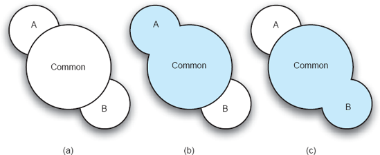
Figuras 15-21. Uma arquitetura de linha de produto conceituada como um diagrama de Venn.
Para discutir mais a fundo as arquiteturas de linhas de produto, voltamos novamente ao exemplo do módulo lunar. Já discutimos diferentes variantes do jogo Lunar Lander nos capítulos anteriores, mas cada uma foi discutida isoladamente. Arquiteturas de linhas de produtos nos dão o poder de especificar e discutir uma família de jogos Lunar Lander em termos de diferenças explícitas entre os membros da família. As construções que tornam isso possível são variantes e versões.
Variantes
Estender uma arquitetura de software comum para uma linha de produtos pode ser realizado por meio da adição de pontos de variação para criar arquiteturas variantes. Cada arquitetura variante representa um produto diferente — um membro da linha de produtos. Um ponto de variação é um conjunto de decisões de design que podem ou não estar incluídas na arquitetura de um determinado produto. Pontos de variação identificam onde as decisões de design para uma arquitetura de produto específica divergem das decisões de design para outros produtos. Cada ponto de variação é acompanhado por uma condição que determina quando as decisões de design para esse ponto de variação são incluídas na arquitetura de um produto. No exemplo acima, a inclusão das decisões de projeto "A" pode ser vista como um ponto de variação. A condição para esse ponto de variação é simples: as decisões só são incluídas se o produto a ser construído for o Produto A.
Ao isolar e codificar pontos de variação, um grande número de arquiteturas de produtos pode ser descrito de forma compacta explorando as diferentes combinações de variações. Considere uma linha hipotética de produtos de jogos Lunar Lander que consiste em três produtos Lunar Lander ligeiramente diferentes: Lunar Lander Lite, Lunar Lander Demo e Lunar Lander Pro.
Lunar Lander Lite foi concebido como um jogo Lunar Lander distribuído gratuitamente com interface de usuário baseada em texto. Ele se assemelha aos jogos Lunar Lander discutidos nos capítulos anteriores, como os implementados emCapítulo 9. Lunar Lander Pro foi pensado como um jogo comercialmente vendido para Lunar Lander com uma interface gráfica mais sofisticada. Internamente, o armazenamento de dados e a lógica do jogo são idênticos aos do Lunar Lander Lite; A única diferença está no componente de interface do usuário. Lunar Lander Demo é uma versão gratuita, porém com tempo limitado, do Lunar Lander Pro. Ele possui a mesma interface gráfica do Lunar Lander Pro, mas expira e não é jogável trinta dias após a instalação. Periodicamente, lembra aos usuários que, se quiserem continuar jogando além do limite de trinta dias, são obrigados a comprar ou atualizar para o Lunar Lander Pro.
As estruturas arquitetônicas dos três produtos do módulo lunar são mostradas na Figura 15-22.[21] A Figura 15-22(a) mostra o Lunar Lander Lite, consistindo em um armazenamento de dados e componente de lógica do jogo, além de uma interface baseada em texto. A Figura 15-22(b) mostra a Demonstração do Módulo de Aterragem Lunar, com um componente gráfico de interface no lugar da interface baseada em texto, além de um lembrete adicional de demonstração e um relógio do sistema que se conectam à interface para lembrar o usuário de se registrar. A Figura 15-22(c) mostra o Lunar Lander Pro, idêntico ao Lunar Lander Demo, mas sem os componentes Demo Reminder e System Clock.
A Tabela 15-1 mostra os elementos — neste caso componentes e conectores — incluídos em cada um dos três membros da linha de produtos. Esse tipo de tabela é ótimo para decidir se e como criar uma linha de produtos. Aqui, é evidente que há uma grande semelhança e sobreposição entre os três produtos — uma boa motivação para criar uma linha de produtos.
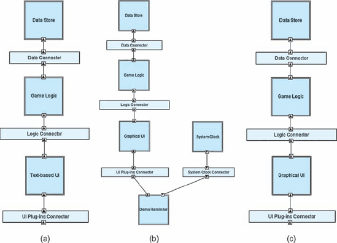
Figuras 15-22. Arquiteturas do módulo lunar: (a) Lite, (b) Demo e (c) Pro.
Uma vez iniciada a criação de uma linha de produtos, é uma boa ideia agrupar elementos de baixo nível em pontos de variação. Lembre-se de que cada ponto de variação representa um conjunto de decisões de design que podem ou não estar incluídas na arquitetura. Isso permite que arquitetos de linhas de produto pensem nos produtos em termos de características, e não de elementos de baixo nível. Por exemplo, embora seja possível pensar em um produto que contenha um Conector de Clock de Sistema, mas não um Clock de Sistema, na prática isso não faz muito sentido.
Tabela 15-1. Elementos presentes em cada membro da linha de produtos do Lunar Lander.
|
|
Produto |
||
|
Componentes e Conectores |
Lite |
Demo |
Pró |
|
Armazenamento de Dados |
X |
X |
X |
|
Conector de Armazenamento de Dados |
X |
X |
X |
|
Lógica do Jogo |
X |
X |
X |
|
Conector de Lógica de Jogos |
X |
X |
X |
|
Interface Baseada em Texto |
X |
X |
|
|
Conector de Plug-Ins UI |
X |
X |
X |
|
Interface gráfica |
|
X |
X |
|
Relógio do Sistema |
|
X |
|
|
Conector de Clock do Sistema |
|
X |
|
|
Lembrete de Demo |
|
X |
|
Tabela 15-2. Agrupando elementos arquitetônicos em pontos de variação.
|
Componentes e Conectores |
Elementos Centrais |
UI de texto |
Interface gráfica |
Tempo Limitado |
|
Armazenamento de Dados |
X |
|
|
|
|
Conector de Armazenamento de Dados |
X |
|
|
|
|
Lógica do Jogo |
X |
|
|
|
|
Conector de Lógica de Jogos |
X |
|
|
|
|
Interface Baseada em Texto |
|
X |
|
|
|
Conector de Plug-Ins UI |
X |
|
|
|
|
Interface gráfica |
|
|
X |
|
|
Relógio do Sistema |
|
|
|
X |
|
Conector de Clock do Sistema |
|
|
|
X |
|
Lembrete de Demo |
|
|
|
X |
Um mapeamento dos elementos para pontos de variação é mostrado emTabela 15-2. Aqui, elementos comuns a todos os produtos são agrupados em Elementos Core. Três outros pontos de variação também são definidos: a inclusão de uma interface textual, uma interface gráfica e se o produto tem ou não limite de tempo. O agrupamento de elementos arquitetônicos ou decisões de design em características é frequentemente motivado por restrições de domínio, objetivos de negócios e dependências individuais e relações de exclusão entre os elementos. Em última análise, esses agrupamentos devem ser escolhidos e definidos por arquitetos de sistemas — sua criação não é um processo algorítmico. Os pontos de variação também terão dependências e relações de exclusão: por exemplo, todos os pontos de variação dependem da inclusão dos Elementos Centrais, e pelo menos um dos dois pontos de variação da interface do usuário deve ser incluído em um produto. Essas relações e restrições devem ser cuidadosamente documentadas.
Uma vez definidos os pontos de variação, os produtos individuais podem ser especificados como combinações dos pontos de variação. Por razões comerciais ou de compatibilidade de pontos de variação, nem todas as combinações de pontos de variação serão transformadas em produtos.
Tabela 15-3mostra a criação dos três produtos do módulo lunar a partir dos pontos de variação definidos emTabela 15-2. Assumindo que os elementos centrais estão sempre incluídos, os três pontos de variação juntos criam 23ou oito produtos potenciais, dos quais três foram selecionados para construção. Além de ajudar as pessoas a entender as diferenças entre os diferentes membros da linha de produtos, esse tipo de tabela é frequentemente útil para gerar ideias para novos produtos usando combinações de pontos de variaçãonãoselecionado. Por exemplo, pode-se conceber um jogo Lunar Lander que inclua tanto um textoeuma interface gráfica, talvez oferecendo múltiplas formas de interagir com o jogo e visualizar seu estado. Também se pode imaginar uma versão do jogo com tempo limitado e interface textual, ou uma versão limitada com ambas as interfaces de usuário.
Tabela 15-3. Produtos como combinações de pontos de variação.
|
|
Lunar Lander Lite |
Demonstração do módulo lunar |
Lunar Lander Pro |
|
Elementos Centrais |
X |
X |
X |
|
UI de texto |
X |
|
|
|
Interface gráfica |
|
X |
X |
|
Tempo Limitado |
|
X |
|
Ao unificar características comuns e documentar esses pontos explícitos de variação, podemos combinar essas três descrições individuais de arquitetura em uma única arquitetura de linha de produto. Algumas linguagens de descrição de arquitetura, como Koala (van Ommering et al. 2000) e xADL (Dashofy, van der Hoek e Taylor 2005), permitem fazer isso diretamente.
A linha de produtos combinados é mostrada emFiguras 15-23, aqui na visualização gráfica de xADL usando as características da linha de produtos de xADL (Dashofy e van der Hoek 2001) para expressar os pontos de variação. Todos os elementos de todos os produtos são mostrados juntos. Elementos como oArmazenamento de DadoseLógica do JogoComponentes que fazem parte do núcleo são representados normalmente. Elementos que estão incluídos em um ou mais pontos de variação são representados comoopcional. Cada elemento opcional é acompanhado por uma condição de proteção que indica quando deve ser incluído em um produto. Nesta linha de produtos, três variáveis — incluindoTextUI, incluindoGraphicalUI e timeLimited — correspondem aos pontos de variação definidos emTabela 15-2. Ao definir o valor de qualquer uma dessas variáveis como "verdadeiro", os elementos correspondentes a esse ponto de variação serão incluídos na arquitetura.
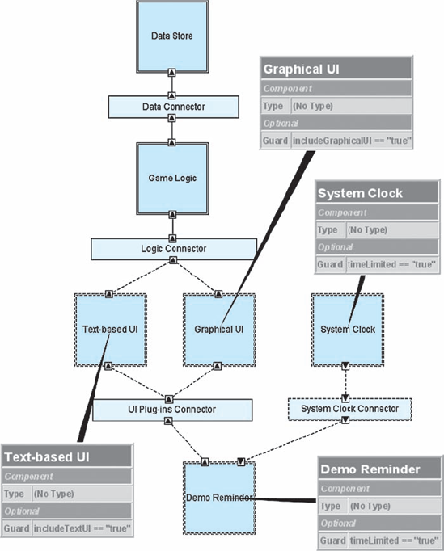
Figuras 15-23. Arquitetura da linha de produtos Lunar Lender.
O uso de uma linguagem de expressão booleana pelo xADL para documentar essas condições de proteção lhe confere poder expressivo adicional, incluindo alguma capacidade de restringir relações entre características. Por exemplo, as funcionalidades de UI baseada em texto e interface gráfica poderiam ser mutuamente exclusivas unificando as variáveis includeTextUI e includeGraphicalUI em uma única variável, digamos 'uiType', cujo valor seria "gráfico" ou "textual", mas não ambos.
Escolha
O processo de reduzir uma linha de produtos para uma linha menor ou um único produto é conhecido como seleção. A seleção envolve avaliar as condições associadas a cada ponto de variação e incluir ou excluir as decisões de projeto associadas.
Considere a linha de produtos Lunar Lender. Ao corrigir a variável includeTextUI para "false", selecionamos apenas produtos que não incluem uma interface textual. Isso reduz o número total de produtos potenciais de 8 para 4. Ao também corrigir "includeGraphicalUI" para "true", podemos selecionar apenas aqueles produtos que possuem uma interface gráfica. Agora, o número total de produtos potenciais é dois. Ao fixar a variável final, timeLimited, para "verdadeira", podemos reduzir a linha de produtos para um único produto — um sem interface textual, com interface gráfica, e isso é limitado no tempo. Esse produto, aliás, é o produto Lunar Lander Demo — algo facilmente visível ao se referir a issoTabela 15-3.
Sem suporte de ferramentas, a seleção da linha de produto deve ser realizada manualmente — seja em tempo real, na mente dos stakeholders que interpretam modelos arquitetônicos, seja criando e mantendo modelos explícitos de cada produto da linha de produtos. Usar uma abordagem que suporte a especificação explícita de pontos de variação e linhas de produto, como Koala ou xADL, pode tornar o processo de seleção substancialmente mais fácil. Especificamente, nessas abordagens, a seleção de linhas de produto pode ser realizada automaticamente por meio do uso de ferramentas. A ferramenta seletor de linhas de produto do xADL permite que os usuários vinculem valores para proteger variáveis e, em seguida, reduzam uma arquitetura de linha de produto, como a mostrada na Figura 15-23, para uma arquitetura de produto único, como a mostrada nas Figuras 15-22, com alguns cliques do mouse.
Capturando Variações ao Longo do Tempo
Os produtos de uma linha de produtos são frequentemente alternativas entre si, destinados ao desenvolvimento e lançamento simultâneos, como ocorre com a linha de produtos Lunar Lander descrita acima. No entanto, arquiteturas de linha de produto também podem ser usadas para capturar diferentes versões do mesmo produto ao longo do tempo. Em geral, versões diferentes do mesmo produto terão arquiteturas relativamente semelhantes (a menos que algo drástico, como um redesenho ou reescrita completa, ocorra). Quando isso acontece, é possível enumerar as decisões de design em ambas as arquiteturas e determinar o que mudou de uma versão de um produto para a seguinte. Esses podem ser transformados em pontos de variação e codificados em uma linha de produtos, onde os diferentes produtos não são alternativas, mas sim o mesmo produto em momentos diferentes.
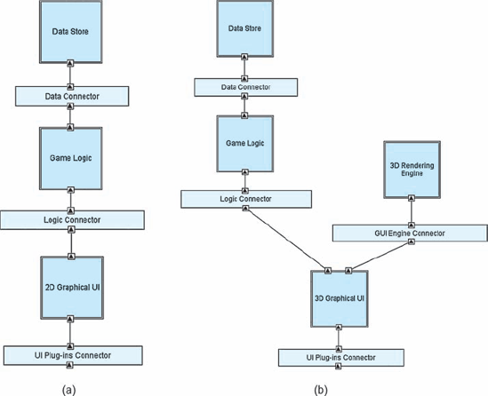
Figuras 15-24. Duas versões de um jogo Lunar Lender: (a) versão 1 e (b) versão 2.
Considere um jogo de Lunar Lander em evolução. A primeira versão do jogo pode incluir uma interface gráfica com gráficos bidimensionais. Uma segunda versão do mesmo jogo pode diferir por incluir uma interface gráfica com gráficos tridimensionais, suportada por um motor de renderização tridimensional comercial. Essas duas arquiteturas de produto são mostradas nas Figuras 15-24(a) e (b), respectivamente.
Claramente, essa situação reflete a situação vista anteriormente, quando os produtos eram jogos diferentes para serem comercializados, e não versões do mesmo jogo. Usando os mesmos mecanismos descritos acima, as duas versões do jogo podem ser codificadas em uma única linha de produtos, com cada produto representando uma versão do jogo. Essa linha de produtos é mostrada nas Figuras 15-25. Aqui, a versão é selecionada usando uma única variável, versão, em vez de escolher uma combinação de pontos de variação.
Usando linhas de produtos como ferramentas para análise hipotética
Linhas de produtos podem ser usadas para capturar variações entre produtos relacionados e entre diferentes versões do mesmo produto. Outra aplicação das linhas de produtos é capturar alternativas de design. O design é frequentemente um processo exploratório — envolve tomar decisões e fazer concessões que afetarão as propriedades e a construção dos produtos-alvo. Surgem perguntas: devemos incluir este componente ou aquele outro? Essa parte da aplicação deve rodar no cliente ou no servidor? Frequentemente, não fica claro qual caminho é o melhor, então múltiplas alternativas são consideradas e buscadas até que mais informações estejam disponíveis.
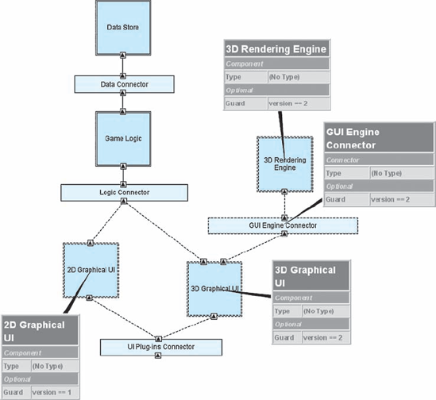
Figuras 15-25. Linha de produtos de jogos Lunar Lander, onde cada produto é uma versão de Lunar Lander.
Quando isso acontece, técnicas de linha de produto podem ser usadas para capturar simultaneamente arquiteturas alternativas. Aqui, cada produto não é um sistema destinado a ser construído, mas sim um entre muitos projetos potenciais de produto. Pontos de variação nessas linhas de produto são pontos de decisão. O processo de seleção pode ser usado como uma forma de análise do "e se".
Gerenciamento de Configuração de Arquiteturas
Engenheiros de software têm lidado com variações, artefatos em evolução, bifurcação, ramificação, fusão e conceitos relacionados há anos, especialmente na área de código-fonte. Em geral, eles são auxiliados nesse aspecto por sistemas de gerenciamento de configuração de software. Sistemas de gerenciamento de configuração também podem ser usados para ajudar a lidar com essas preocupações ao lidar com artefatos como modelos arquitetônicos, especialmente quando os próprios artefatos não oferecem suporte explícito para esses conceitos.
Uma abordagem simples é simplesmente colocar modelos de arquitetura em um sistema de controle de versões, como RCS (Tichy 1985), CVS (Fogel 1999), Subversion (Collins-Sussman, Fitzpatrick e Pilato 2004) ou ClearCase (Atria Software 1992). Essa é uma opção viável para versionar arquiteturas como um todo, e ajuda a acompanhar a evolução das arquiteturas ao longo do tempo. Até certo ponto, alternativas podem ser criadas por meio de revisões ramificadas.
Essa abordagem não funciona particularmente bem para criar ou manter arquiteturas de linha de produto. Gerenciar uma arquitetura de linha de produto significa estabelecer um conjunto central de decisões de design e então combinar essas decisões centrais com pontos de variação que consistem em decisões adicionais. Em geral, as decisões de design estão distribuídas entre modelos arquitetônicos, e é por isso que linguagens de descrição de arquitetura como Koala e xADL incorporam os pontos de variação dentro dos modelos. Como os sistemas de controle de versão geralmente funcionam no nível dos arquivos, é difícil usá-los para gerenciar elementos dentro de arquivos — por exemplo, um componente especificado dentro de um modelo arquitetônico.
Um compromisso é tentar separar partes centrais das arquiteturas e pontos de variação em arquivos separados, e então gerenciar a evolução desses elementos de forma independente em um sistema de controle de versões. Isso funciona em teoria, mas na realidade é difícil e inconveniente ter decisões de design relacionadas para um único membro da linha de produto espalhadas por arquivos, especialmente quando ferramentas automatizadas de fusão não estão disponíveis para fundir tudo novamente.
Implementação de Linhas de Produtos
As principais reduções nos custos de implementação do uso de uma linha de produtos ocorrem principalmente por meio do reuso extensivo: quando dois produtos de uma linha compartilham uma arquitetura semelhante, as implementações devem ser (virtualmente) idênticas. Alcançar esse nível de reutilização deve começar na arquitetura. Aqui, a flexibilidade nos conectores e métodos de comunicação é um dos principais fatores que impulsionam a reutilização de linhas de produtos. Se for escolhida uma arquitetura onde componentes e conectores estão fortemente ligados, será extremamente difícil introduzir pontos de variação sem recodificar componentes existentes. No entanto, se conectores flexíveis e estilos de comunicação (como passagem de mensagens) forem usados, é mais fácil introduzir variações na arquitetura sem fazer mudanças extensas. No entanto, ter flexibilidade no nível arquitetônico não significa necessariamente que a mesma flexibilidade estará presente no nível de implementação.
Capítulo 9Discutiu como implementar um sistema construído usando técnicas de arquitetura de software é, em grande parte, um problema de mapeamento: entender e controlar como as decisões de design tomadas na arquitetura se mapeiam para artefatos de implementação. Em geral, todos os conselhos emCapítulo 9Vale para isso também. Implementar uma arquitetura de linha de produto ainda é um problema de mapeamento, exceto que múltiplos produtos compostos por elementos centrais e pontos de variação estão envolvidos. Nesse caso, separar preocupações nos artefatos de implementação ao longo dos limites dos pontos de variação na linha de produtos é fundamental.
Considere a situação apresentada na Figura 15-26. Na Figura 15-26(a), uma boa separação das preocupações não foi mantida na implementação. Diversos arquivos-fonte (File1.java, File2.java e File3.java) são responsáveis por implementar tanto preocupações centrais quanto específicas do produto. Nesse caso, nem o Produto A nem o Produto B podem ser construídos sem importar pelo menos parte da implementação do outro. Isso dificulta a evolução dos produtos de forma independente e a integração de novos produtos à linha de produtos. A Figura 15-26(b) mostra uma boa separação de preocupações: aqui, artefatos de implementação correspondentes a produtos são mantidos separados do common core e entre si. Ambos os produtos podem ser construídos sem usar artefatos que (parcialmente) implementam outros produtos.
Uma forma de manter essa separação de preocupações é usar frameworks flexíveis de implementação de arquitetura, conforme discutido emCapítulo 9. Muitos frameworks de implementação ajudam a impor um acoplamento frouxo entre implementações de componentes e conectores, de modo que componentes e conectores possam ter suas dependências alteradas de forma fácil e automática. Frameworks de implementação frequentemente permitem que componentes e conectores sejam vinculados entre si "tardiamente" — seja no momento da construção do produto ou até mesmo dinamicamente em tempo de execução. Implementações que empregam ligações tardias dos componentes geralmente garantem melhor separação e independência dos componentes e ajudam a impulsionar o reutilizo. A separação entre interface e implementação também é importante: interfaces bem definidas em nível de implementação ajudam a estabelecer os serviços fornecidos e necessários por um componente (ou conjunto de componentes) sem exigir uma implementação específica. Essa separação de preocupações aumenta ainda mais a flexibilidade: mudanças na implementação de um componente não exigirão alterações em outros componentes se o contrato da interface for mantido.
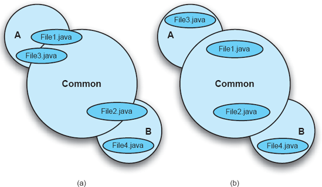
Figuras 15-26. Manter a separação das preocupações ao implementar uma arquitetura de linha de produto: (a) ruim e (b) bom.
Isso nem sempre é fácil de alcançar. Frequentemente, produtos antigos são incorporados a uma linha de produtos. Esses produtos podem não usar componentes flexíveis, conectores e métodos de comunicação. Nesse caso, deve-se considerar uma refatoração cuidadosa, orientada pela arquitetura da linha de produtos. Fixações apertadas em uma linha de produtos são viáveis desde que não interfiram ou cruzem os pontos de variação. Por exemplo, se três componentes centrais que fazem parte de cada produto da linha de produtos estiverem fortemente acoplados, isso não é um problema grave: esses componentes nunca serão separados, então tornar suas ligações flexíveis entre si terá valor limitado no curto prazo. Em vez disso, desenvolvedores e arquitetos devem focar em tornar as fixações de componentes que existem apenas em alguns poucos produtos mais flexíveis.
Linhas de Produtos e Sistemas de Gerenciamento de Código-Fonte
Qualquer projeto de desenvolvimento maduro vai aproveitar algum tipo de conjunto de ferramentas de gerenciamento de configuração para acompanhar diferentes versões de artefatos de implementação de nível inferior: arquivos de código, arquivos de recursos e assim por diante. Gerenciar com sucesso implementações de linha de produto requer compreensão da relação entre versões dos elementos em nível de arquitetura (componentes, conectores) e versões dos elementos em nível de implementação (código, arquivos de recursos) armazenados em um repositório de gerenciamento de configuração. Implementações que são separadas de forma limpa ao longo dos elementos arquitetônicos simplificam muito o problema do mapeamento.
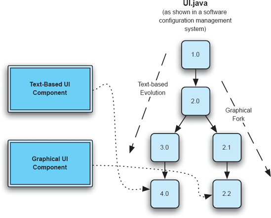
Figuras 15-27. Lidando com versões e ramificações de desenvolvimento em um repositório de gerenciamento de configuração.
Um fenômeno que ocorre com mais frequência no desenvolvimento de linhas de produto do que no desenvolvimento de produto único é o uso de múltiplas versões do mesmo artefato de implementação (por exemplo, arquivo fonte) em diferentes lugares da arquitetura da linha de produtos. Por exemplo, lembre-se da linha de produtos Lunar Lander mostrada na Figura 15-23. Talvez, por algum motivo, a implementação da interface de usuário baseada em texto e da interface gráfica tenha sido baseada no mesmo código, um único arquivo chamado UI.java, que evoluiu ao longo do tempo. Em algum momento no passado, um fork de UI.java foi criado no repositório de gerenciamento de configuração, sem renomear o arquivo. Assim, existem dois ramos de desenvolvimento do UI.java: um para uma interface textual e outro para uma interface gráfica.
Essa situação é retratada nas Figuras 15-27. Aqui, o componente de UI Baseado em Texto usa a versão 4.0 da UI.java, enquanto o componente de UI Gráfica usa a versão 2.2. Em uma situação como essa, mapeamentos de implementação devem não se referir apenas a arquivos individuais, mas também a versões individuais de arquivos individuais.
Unificando Arquiteturas de Produto com Diferentes Heranças Intelectuales
Infelizmente, linhas de produtos nem sempre são consideradas no início de um grupo de produtos relacionados. A ideia de usar linhas de produtos frequentemente surge no radar de uma organização apenas depois que ela desenvolveu muitos produtos com funcionalidades semelhantes e duplicou um enorme esforço para isso. Alternativamente, fusões e aquisições de empresas podem deixar uma única organização com a responsabilidade de desenvolver, manter e evoluir produtos muito semelhantes (e em um certo momento, concorrentes). Atualmente, o uso de linhas de produtos torna-se extremamente atraente como forma de reduzir custos, reutilizando conhecimentos de engenharia e decisões arquitetônicas de um produto para outro. A dificuldade é que os produtos existentes na linha frequentemente compartilham pouca herança intelectual, e as arquiteturas dos produtos diferem bastante.
Esse é um dos problemas mais difíceis no desenvolvimento de linhas de produtos. A principal tensão é que o objetivo de usar uma linha de produtos é permitir o reuso, mas os produtos existentes apresentam pouca ou nenhuma reutilização. Quando isso acontece, tentar desenvolver uma arquitetura de linha de produtos que inclua todos os produtos existentes pode ter valor limitado, exceto como um artefato histórico. Em vez disso, os processos devem ser voltados para o futuro, tentando extrair as lições arquitetônicas de projetos anteriores e unificá-las em uma linha de produtos para produtos futuros (ou versões futuras dos produtos).
Antes que uma arquitetura de linha de produto possa ser desenvolvida, é necessário obter arquiteturas individuais de produtos. Organizações com conhecimentos arquitetônicos já terão arquiteturas documentadas para seus produtos, mas, como discutimos, muitas arquiteturas de produtos evoluem organicamente ou divergem de suas intenções originais. Neste caso, recuperação arquitetônica (discutida emCapítulos 3e4) é o primeiro passo rumo ao desenvolvimento de linhas de produtos.
O próximo passo do processo é normalizar as arquiteturas de produtos existentes (se necessário). Frequentemente, mesmo quando arquiteturas para cada produto estão disponíveis, elas podem não capturar os mesmos aspectos dos sistemas em desenvolvimento, ou capturar esses aspectos com o mesmo nível de detalhe. Eles podem não usar a mesma terminologia para se referir a conceitos semelhantes. Quando isso ocorre (e quase sempre é), alguma normalização deve ocorrer — algumas das arquiteturas devem ser adaptadas para que as semelhanças e diferenças entre as arquiteturas de produto possam ser mais facilmente identificadas. Felizmente, a elaboração arquitetônica nessa situação é facilitada pelo fato de existirem produtos reais e implementados dos quais extrair as informações adicionais necessárias.
Quando arquiteturas de produtos normalizadas estão disponíveis, elas podem ser comparadas para identificar aspectos comuns e pontos de variação. A menos que todas as arquiteturas sejam expressas na mesma notação e no mesmo nível de detalhe, provavelmente não é possível automatizar grande parte desse processo. Em vez disso, é mais útil reunir os arquitetos e outros interessados de cada produto em uma série de reuniões. Desenvolvimento de tabelas semelhantes aTabela 15-1eTabela 15-2Para entender a sobreposição entre características e elementos nos diversos produtos pode ser um exercício útil.
Desenvolver uma arquitetura de linha de produto a partir desse ponto torna-se uma atividade centrada nos stakeholders. Não existe uma única maneira certa de proceder e, dependendo do domínio e dos objetivos organizacionais, o esforço pode seguir uma de várias direções diferentes:
Questões Organizacionais na Criação e Gestão de Linhas de Produtos
Este capítulo abordou em grande parte a criação e gestão de linhas de produtos e arquiteturas de linhas de produto sob uma perspectiva técnica. No entanto, usar linhas de produtos não é uma atividade exclusivamente técnica. Uma abordagem baseada em linhas de produtos precisa ser tanto organizacional e cultural quanto técnica. Criar uma linha de produtos muitas vezes significa integrar as necessidades e opiniões das partes interessadas de perspectivas fundamentalmente diferentes no mesmo esforço. Isso pode gerar todo tipo de problema organizacional e técnico: atritos entre as equipes, aumento de funcionalidades, dificuldade em priorizar clientes, arquiteturas de mínimo denominador comum, entre outros.
Além disso, a estratégia de investimento de uma organização em seus produtos precisa mudar para se adequar a uma abordagem de linha de produtos. Criar uma linha de produtos envolve custos substanciais que eventualmente compensam, mas não no contexto de um único produto. Em vez disso, eles são recuperados por meio de menores despesas de manutenção em múltiplos produtos, do aumento dos lucros com a venda de mais variantes de produtos e dos custos mais baixos de desenvolvimento de versões futuras dos produtos. Isso exige que as organizações pensem horizontalmente, além dos limites do produto e das equipes, o que frequentemente exige uma mudança tanto organizacional quanto cultural.
Paul Clements e Linda Northrop escreveram extensivamente sobre essas questões em seu livro Software Product Lines: Practices and Patterns (Clements e Northrop 2001); incentivamos quem estiver interessado a consultar esta e outras fontes para obter orientações mais detalhadas a esse respeito.
DSSAS, LINHAS DE PRODUTOS E ESTILOS ARQUITETÔNICOS
Discutimos arquiteturas de software específicas de domínio (DSSAs) e linhas de produtos, bem como sua relação entre si. Surge uma pergunta natural neste ponto: quais são as relações entre DSSAs, linhas de produtos e estilos arquitetônicos?
Lembre-se de que estilos arquitetônicos representam um pacote reutilizável de decisões de design que podem ser aplicadas a diferentes produtos para obter as qualidades desejadas. De certa forma, tanto DSSAs quanto arquiteturas de linha de produto podem ser vistas sob a mesma perspectiva. Normalmente, porém, estilos arquitetônicos são muito mais gerais do que DSSAs ou linhas de produtos. A maioria dos estilos arquitetônicos pode ser aplicada em muitos domínios. Por exemplo, o estilo pipe-and-filter tem sido usado para desenvolver aplicações de processamento de texto, sistemas de composição tipográfica e compiladores de programas. Normalmente, aplicações tão diversas não seriam todas membros da mesma DSSA ou linha de produtos.
No entanto, os estilos desempenham um papel importante no desenvolvimento tanto dos DSSAs quanto das linhas de produtos. Seria incomum que produtos diferentes na mesma DSSA ou linha de produtos tivessem estilos arquitetônicos significativamente distintos. Como mencionado acima, um dos requisitos canônicos mais comuns no desenvolvimento de uma DSSA é o estilo arquitetônico que será usado para criar aplicações dentro da DSSA. Normalmente, uma arquitetura de referência para um DSSA seguirá esse estilo prescrito. Da mesma forma, produtos individuais na mesma arquitetura de linha de produtos geralmente seguirão o mesmo estilo. O uso de um estilo comum em uma DSSA ou linha de produtos é, em última análise, um esforço para garantir qualidades consistentes nos produtos que surgem e evitar que se afastem da intenção original da linha de produtos.
Assim como podem existir pontos de variação em arquiteturas, também podem existir pontos de variação nos próprios estilos arquitetônicos: diferentes conjuntos de restrições para resolver problemas relacionados. Ao aplicar técnicas de arquitetura de linha de produto às decisões que compõem estilos arquitetônicos em vez de arquiteturas, é possível criar uma família de estilos arquitetônicos.
Lembre-se de dois dos estilos arquitetônicos mais básicos deCapítulo 4: sequencial-lote e pipe-and-filter, como mostrado emFiguras 15-28. Esses estilos na verdade têm muitas limitações em comum. Por exemplo, ambos impõem uma ordenação linear dos componentes, cada um com uma entrada e uma saída, e os dados se movem unidirecionalmente pela linha, sendo processados individualmente por cada componente. Eles diferem em alguns detalhes: sistemas em lote sequencial passam os dados em massa em blocos, e apenas um componente opera nos dados por vez; Sistemas pipe-and-filter passam dados conforme estão disponíveis e os componentes executam em paralelo quando possível. Aqui, pontos explícitos de variação podem ser usados para expressar e raciocinar sobre a relação entre estilos arquitetônicos, assim como são usados para raciocinar sobre a relação entre produtos de software.
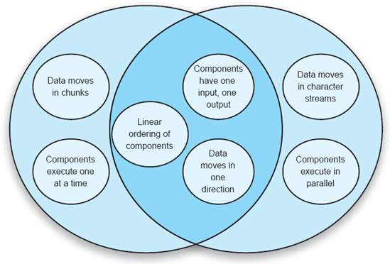
Figuras 15-28. Um exemplo de estilos arquitetônicos relacionados.
EXEMPLOS DE DSSE
Agora apresentamos dois exemplos de como técnicas específicas de engenharia de software, incluindo arquiteturas de linha de produto, foram aplicadas na prática de desenvolvimento de software. O primeiro exemplo é o uso pela Philips Electronics da linguagem de descrição da arquitetura Koala no desenvolvimento de softwares para dispositivos no domínio da eletrônica de consumo. O segundo exemplo é o domínio dos rádios definidos por software, dispositivos configuráveis que se comunicam por ondas de rádio, com sua funcionalidade interna implementada por software.
Koala e Eletrônicos de Consumo
A eletrônica de consumo é um domínio dinâmico e altamente competitivo do desenvolvimento de produtos. Por décadas, dispositivos como televisores e codificadores de cabos eram relativamente simples, com poucas capacidades bem definidas. Ao longo dos anos, eles se tornaram cada vez mais complexos, em grande parte devido aos avanços em seus softwares embarcados. As versões mais recentes desses dispositivos incluem configuração gráfica, guias de programação na tela, vídeo sob demanda e gravação e reprodução digital de vídeo. Em um mercado global, cada um desses dispositivos deve ser implantado em várias regiões ao redor do mundo, configurados especificamente para os idiomas e padrões de transmissão usados nessas regiões.
O aumento do número de recursos dos dispositivos eletrônicos de consumo vem acompanhado de uma forte concorrência entre organizações, e é tão importante manter os custos baixos quanto implantar a maior variedade de recursos. Do ponto de vista do software, manter os custos baixos pode ser feito de duas maneiras principais: limitando o custo do desenvolvimento de software e limitando os recursos de hardware exigidos pelo software desenvolvido. Além disso, os fabricantes costumam multifonte certas peças. Ou seja, eles obtêm e usam peças semelhantes (chips, placas, sintonizadores e assim por diante) de vários fornecedores, comprando de fornecedores que podem oferecer a peça no momento certo ou pelo menor preço, e fornecendo uma medida de seguro contra a falha de entrega por parte de um fornecedor específico. Se as peças não forem 100% intercambiáveis, o software pode ser usado para mascarar as diferenças.
As arquiteturas de linha de produtos oferecem uma forma atraente de lidar com a diversidade de dispositivos e configurações encontradas no domínio da eletrônica de consumo. A Philips Electronics desenvolveu uma abordagem chamada Koala (van Ommering et al. 2000) para ajudá-la a especificar e gerenciar seus produtos eletrônicos de consumo. Koala é principalmente uma linguagem de descrição de arquitetura (derivada da ADL de Darwin). O koala também contém aspectos de um estilo arquitetônico, pois prescreve padrões e semânticas específicos que são aplicados às construções descritas na ADL do Koala. Koala, assim como Darwin, é efetivamente uma notação estrutural: mantém os conceitos darwinianos de componentes, interfaces (tanto fornecidas quanto necessárias), composições hierárquicas (componentes com suas próprias estruturas internas) e links para conectar as interfaces. Além desses construtos básicos, o Koala possui construtos especiais para apoiar a variabilidade da linha de produtos. O Koala também está fortemente ligado a implementações de componentes embarcados: certos aspectos do Koala (como o método pelo qual ele conecta o necessário e as interfaces fornecidas no código) são especificamente projetados pensando em estratégias de implementação (como binding estático por meio de macros em C).
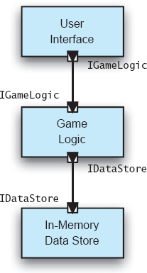
Figuras 15-29. Diagrama básico de coalas do módulo lunar.
Um diagrama básico de Koala sem variabilidade da linha de produto para uma aplicação de módulo lunar é mostrado nas Figuras 15-29. Como você pode ver, diagramas básicos de Koalas são efetivamente equivalentes aos diagramas de Darwin. Koala estende Darwin das seguintes maneiras:
}
O tipo de interface IDataStore pode ser fornecido (ou exigido) por qualquer número de componentes Koala. Quando uma interface fornecida e uma necessária são conectadas, o tipo de interface fornecido deve fornecer pelo menos as funções exigidas pelo tipo de interface requerido.
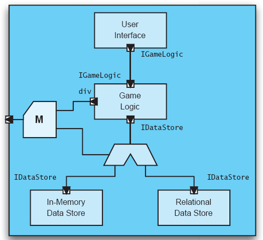
Figuras 15-30. Diagrama de coalas do módulo lunar com um ponto de variação.
As figuras 15-30 mostram uma arquitetura de Lunar Lander em Koala com um ponto de variação. Aqui, a aplicação pode usar um repositório de dados em memória ou um armazenamento relacional para manter o estado da aplicação. A interface necessária do componente Game Logic agora é roteada por um switch, que é configurado por parâmetros de configuração fornecidos externamente. O componente Game Logic inclui uma nova div de interface de diversidade que permite acessar esses parâmetros de configuração externos.
Interfaces Obrigatórias Opcionais
Vários componentes podem fornecer serviços semelhantes, mas não idênticos. Por exemplo, um componente básico de sintonizador de TV pode ter apenas a capacidade de alterar frequências, mas um sintonizador avançado pode também ser capaz de buscar frequências válidas. É possível que os chamadores de um sintonizador de TV incluam uma interface opcional obrigatória e perguntem se a interface está realmente conectada ou não. Se estiver conectado, o chamador pode fazer chamadas pela interface opcional; Se não, o interlocutor deve se comportar/degradar com elegância.
Por meio desses mecanismos, a Koala dá aos arquitetos o poder de especificar e implementar linhas de produtos de sistemas embarcados. Os principais pontos fortes do Koala são sua notação direta, visualização gráfica intuitiva e suporte a ferramentas para implementar linhas de produtos de forma eficiente. Embora desenvolvido para o domínio da eletrônica de consumo, o Koala é genérico o suficiente para uso em muitos domínios.
Uma desvantagem do Koala é a falta de suporte a conectores de software explícitos (uma característica herdada de Darwin). Koala implica que a comunicação entre componentes ocorre exclusivamente por meio de chamadas síncronas de procedimento de solicitação-resposta. Não há suporte explícito para interação assíncrona ou de passagem de mensagens (a passagem de mensagens, em particular, é um mecanismo bem conhecido para apoiar flexibilidade e diversidade). No entanto, no domínio alvo (sistemas embarcados em dispositivos eletrônicos de consumo), chamadas de procedimentos síncronos são um modo muito típico de interação.
O uso de uma abordagem centrada na arquitetura deu à Philips a capacidade de dividir seus sistemas de software em componentes reutilizáveis que se comunicam por meio de interfaces explícitas, mantendo ainda o pequeno tamanho e a eficiência necessários para o desenvolvimento de sistemas embarcados. Inspirando-se em uma linguagem de descrição de arquitetura existente (Darwin), a Philips definiu uma ADL específica de domínio (Koala) com semântica que mapeava bem para seu domínio de aplicação. Além disso, a Philips incorporou suporte explícito para variabilidade no Koala. Isso lhe deu a capacidade de lidar com as muitas variações induzidas pelo mercado em suas linhas de produtos (para lidar com múltiplas categorias de produtos com diferentes combinações de recursos, requisitos diferentes devido à internacionalização, e assim por diante). Em vez de manter descrições arquitetônicas separadas para cada produto, linhas inteiras de produtos podem ser capturadas em um único modelo. Mais de 100 engenheiros da Philips utilizaram o Koala, tornando-o uma das aplicações industriais de maior sucesso de ADLs e desenvolvimento centrado em arquitetura específica por domínio.
Rádios Definidos por Software
A comunicação pelo ar tem sido usada para facilitar todos os tipos de avanços sociais, desde transmissões antigas de áudio e código Morse até transmissões de vídeo para televisão, passando pelos avanços mais recentes em telefones celulares e conexões Wi-Fi de banda larga. Tradicionalmente, o hardware de rádio tem sido especializado para um tipo específico de aplicação: por exemplo, um sistema de som comum de carro é limitado a receber transmissões analógicas de áudio AM/FM. Ele não pode, por exemplo, decodificar sinais de TV (nem mesmo a parte de áudio) ou funcionar como um repetidor WiFi na Internet. Para isso, seria necessário que os componentes de hardware fossem trocados ou adaptados.
As capacidades aumentadas dos componentes digitais de processamento de sinais, bem como os avanços em hardware reconfigurável[22], em particular, tornaram possível repensar como dispositivos de comunicação por rádio são construídos tanto do ponto de vista de hardware quanto de software. O resultado foi um esforço para desenvolver os chamados rádios definidos por software (SDRs) (Dillinger, Madani e Alonistioti 2003). Um rádio definido por software é um dispositivo que pode transmitir, receber e processar sinais pelo ar para uma variedade de aplicações, onde a aplicação é definida pelo software que é carregado no rádio. Componentes padrão de um rádio definido por software incluem uma antena, conversão analógico-digital, FPGAs para processamento digital de sinais de alta frequência e processadores de uso geral (como PowerPCs) para tarefas adicionais de processamento de sinais, além de várias portas de I/O para interface com dispositivos de áudio e vídeo (displays, microfones, alto-falantes e assim por diante).
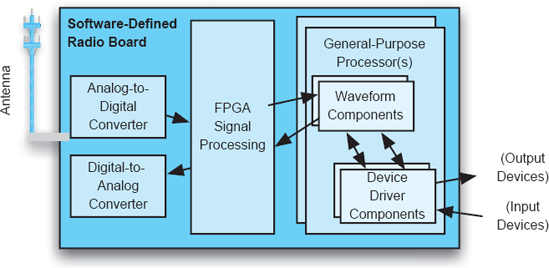
Figuras 15-31. Pipeline básico de dados de um rádio definido por software.
O fluxo básico de dados através de uma placa de rádio hipotética definida por software é mostrado na Figura 15-31. Dependendo da configuração do(s) FPGA(s) e dos componentes e conectores carregados nos processadores de uso geral, o rádio pode ser usado para todo tipo de aplicação. Em teoria, um rádio definido por software poderia funcionar como tudo, desde um rádio FM comum até uma televisão e um ponto de acesso sem fio, simplesmente carregando diferentes softwares no rádio.
O domínio dos rádios definidos por software é ideal para a aplicação dos princípios DSSE. Uma arquitetura de software específica para domínio foi desenvolvida para rádios definidos por software chamada Arquitetura de Comunicações por Software (Modular Software-programmable Radio Consortium 2001); veja o recurso anexo intitulado "A Arquitetura de Comunicações de Software (SCA)." No entanto, esse DSSA em particular não é uma panaceia, e a barra lateral toca em muitos pontos que podem torná-lo menos que ideal.
A Arquitetura de Comunicações de Software (SCA)
As organizações interessadas em desenvolver rádios definidos por software têm grande interesse no design, especialmente no design de software, desses rádios. Isso resultou no desenvolvimento de um padrão conhecido como Arquitetura de Comunicações de Software (SCA), que rege o design de SDRs (embora, como o nome sugere, seja destinado a aplicações futuras em outros tipos de sistemas de comunicação).
O SCA é um documento interessante de estudar, pois é a arquitetura padrão que muitas organizações que implementam SDRs devem seguir.
A SCA analisa a arquitetura de software de um rádio definido por software como um conjunto de componentes de software interagindo. Esses componentes são definidos e interagem via CORBA (vejaCapítulo 4). Como era de se esperar, a escolha do CORBA como única técnica de interconexão de software induz várias consequências arquitetônicas nos sistemas SCA, entre elas:
A maior parte da especificação SCA é uma coleção de definições de interface IDL CORBA para vários tipos de componentes. Por exemplo, componentes do sistema de arquivos implementam uma interface muito semelhante à interface do sistema de arquivos POSIX. Existem outras definições de interface para diferentes tipos de drivers e outros componentes de serviço.
Os dados reais de sinal na arquitetura são divididos em pacotes digitais de dados. Pacotes de dados são passados de um componente para outro por meio de uma chamada de fato chamada PushPacket. Um componente que deve enviar um pacote de dados para outro componente chamará o PushPacket e passará o pacote de dados para o componente alvo. Cadeias desses componentes criam pipelines de processamento e fluxos de dados.
A SCA levanta várias questões importantes baseadas no que é especificado ou não. Por exemplo, o estilo arquitetônico incorporado pelo SCA é um estilo de objetos distribuídos, com uma biblioteca de diferentes tipos de componentes (objetos) que podem ser usados para construir SDRs.
Não está claro qual veio primeiro: o estilo ou a escolha do middleware. Os desenvolvedores da SCA podem ter decidido que um estilo de objetos distribuídos era o estilo certo para construir rádios definidos por software e então escolhido o CORBA como plataforma ou framework middleware para implementação. No entanto, também é possível que os desenvolvedores da SCA, ao encontrar plataformas de hardware heterogêneas e implementações de componentes (especialmente implementações de componentes legadas embutidas em rádios não definidos por software), tenham escolhido o CORBA por seus serviços de mascarar essas diferenças, e o estilo de objetos distribuídos tenha sido apenas consequência dessa decisão. Para os caminhos de controle de baixa largura de banda na arquitetura, objetos distribuídos faz sentido, mas objetos distribuídos não é um estilo que venha à mente para lidar com fluxos de dados de alto rendimento de pacotes passando por um rádio. Neste caso, um estilo híbrido que tivesse suporte explícito para fluxos, ou pelo menos fluxos de dados assíncronos baseados em mensagens, poderia ter sido mais apropriado.
Outra pergunta a se fazer é por que o próprio CORBA foi especificado na SCA, em contraste com outros middlewares que suportam um estilo de objetos distribuídos, como COM, ou um framework de arquitetura que pode ser implementado com diferentes tipos de middleware. A intenção provavelmente era apoiar a interoperabilidade entre componentes desenvolvidos de forma independente: Como o CORBA não está vinculado a um fornecedor específico, existem muitas implementações do CORBA. No entanto, a interoperabilidade entre implementações CORBA raramente é perfeita, e componentes desenvolvidos contra uma implementação podem ter dificuldade para funcionar no contexto de outra. Pode-se argumentar que a designação do CORBA como um aspecto central dos sistemas baseados em SCA é um caso de superespecificação na arquitetura.
As descrições acima falam sobre quais aspectos de um rádio definido por software são especificados pela SCA. Talvez seja mais importante entender quais aspectos não são especificados. Surpreendentemente, o SCA quase não fornece orientação sobre como desenvolver um rádio baseado nos componentes e interfaces que ele define. Contém poucas informações sobre como configurar os componentes, estruturar a aplicação de rádio como um todo ou como implementá-los. Isso deixa talvez as decisões mais importantes e difíceis sobre construir um rádio inteiramente para os próprios desenvolvedores de rádio.
Uma última pergunta a ser feita diz respeito aos tipos de qualidades de software possibilitadas pelo uso do SCA. Portabilidade, composabilidade e facilidade de integração podem ser possibilitadas por essa arquitetura devido às especificações detalhadas da interface e à identificação de middleware específico para conectar elementos. No entanto, essas qualidades são as mais importantes no desenvolvimento de um rádio definido por software? Pode-se argumentar que qualidades mais importantes como desempenho e confiabilidade são amplamente ignoradas pela SCA, e esse talvez seja seu maior problema. Até o momento, o veredito ainda não está claro sobre o sucesso do SCA; vários esforços comerciais e militares estão em andamento para implementar rádios baseados em SCA. No entanto, grupos de código aberto e de amadores também estão implementando rádios definidos por software usando suas próprias arquiteturas e frameworks, alcançando certo sucesso. O tempo dirá se o SCA dará frutos ou não.
O domínio de rádio definido por software também é um exemplo de onde linhas de produtos podem causar um impacto significativo, pois o domínio abrange muita variabilidade. A variabilidade existe em muitos níveis diferentes de abstração:
A variabilidade em cada um desses níveis deve ser compreendida, controlada e gerenciada. A primeira coisa a notar é que esses níveis de abstração são mais ou menos hierárquicos: veículos contêm rádios, rádios contêm placas, placas contêm elementos de processamento e elementos de processamento contêm elementos de software. Notações de modelagem que suportam diretamente arquiteturas hierárquicas, como Darwin, Koala ou xADL 2.0, são todas boas candidatas para modelar tal arquitetura. A variabilidade em cada nível também é um pouco limitada: rádios definidos por software serão desenvolvidos para propósitos específicos (militares, comerciais, entre outros). Assim, as topologias de rede terão certas características comuns. Para uma determinada organização, apenas algumas configurações diferentes de rádio e placa serão produzidas: uma organização pode produzir apenas um rádio de dois canais e um de quatro canais, por exemplo. As configurações de placas podem ser limitadas a uma "placa de teste" e uma "placa de produção". As configurações de software serão parcialmente controladas pela configuração da placa: cada dispositivo ou controlador na placa provavelmente terá um componente de driver de dispositivo associado; Outros componentes serão acionados pelas várias aplicações carregadas no rádio.
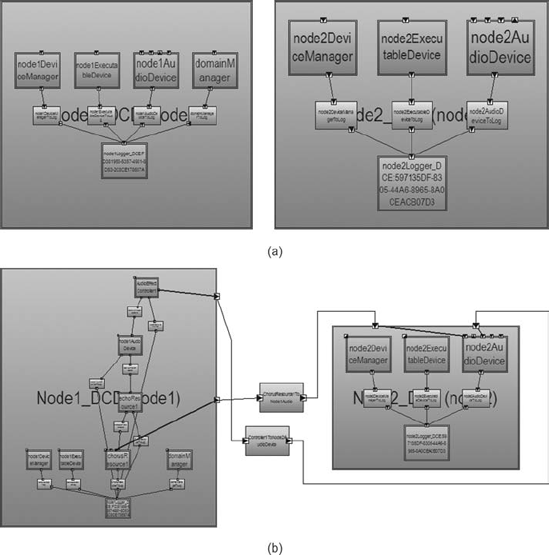
Figuras 15-32. Estrutura de rádio definida por software com (a) apenas drivers e ambiente operacional carregados, e (b) com uma aplicação de forma de onda implantada.
As figuras 15-32 mostram duas variantes da arquitetura de um rádio definido por software chamado SCA Reference Implementation (SCARI), modelado em xADL e representado na visualização gráfica do xADL. SCARI é um exemplo simples de rádio definido por software baseado em SCA, destinado a demonstrar como o SCA pode ser usado para implementar um SDR. A Figura 15-32(a) mostra o rádio com apenas os drivers de dispositivo e o ambiente operacional implantados. A Figura 15-32(b) mostra o mesmo rádio com uma aplicação adicional de forma de onda implantada. Cada um representa uma variante diferente de linha de produto e, ao atribuir proteções a cada componente da forma de onda usando técnicas mostradas anteriormente neste capítulo, as implantações de formas de onda podem ser aplicadas seletivamente ao rádio usando seleção por linha de produto.
A extrema flexibilidade do domínio é induzida por hardware cada vez mais adaptável, mas é viabilizada principalmente pelo software. Como o software é tão maleável, isso não deveria ser surpresa. Por causa disso, assim como outras restrições que devem ser consideradas ao lidar com SDRs — tamanho, consumo de energia, desempenho, tempo para carregar e descarregar formas de onda, entre outros — os SDRs são outro domínio onde a captura e reutilização de conhecimento e experiência especializados em engenharia pode reduzir substancialmente custos e riscos no desenvolvimento de novos sistemas.
ASSUNTO FINAL
A engenharia de software específica por domínio é, de muitas maneiras, o ápice de todos os conselhos dados neste livro. Isso amplia substancialmente o desafio do desenvolvimento baseado em arquitetura: em vez de aplicar apenas princípios centrados na arquitetura a um único produto, organizações e até comunidades inteiras precisam aplicá-los em uma variedade de produtos relacionados. Isso é complicado pelo fato de que os produtos já desenvolvidos no domínio foram desenvolvidos para objetivos de negócios diferentes, muitas vezes concorrentes, por grupos de desenvolvimento isolados que não compartilhavam conhecimento de engenharia ou ativos arquitetônicos. Esse é talvez o maior desafio no desenvolvimento de software centrado em arquitetura, mas também traz a maior recompensa potencial: uma redução substancial nos custos e riscos para desenvolver novos sistemas dentro de um domínio inteiro.
De certa forma, a criação de uma arquitetura de software específica para domínio se assemelha ao desenvolvimento de uma arquitetura para um único produto — ainda envolve modelagem, visualização, análise e aplicação de decisões principais de design. No entanto, isso fica ainda mais difícil pelo fato de que a arquitetura precisa funcionar para uma ampla variedade de sistemas. Existe uma tensão constante entre superespecificação e subespecificação — especificar demais e restringir os tipos de sistemas que você pode construir versus especificar muito pouco e fornecer orientação e valor insuficientes. Contribuintes-chave podem vir de diferentes origens e organizações e podem ter ideias fundamentalmente distintas sobre como a arquitetura deve ser construída. Este capítulo forneceu um levantamento dos tipos de artefatos que compõem uma arquitetura de software específica de domínio e forneceu alguns conselhos sobre como criá-los. No entanto, no fim das contas, ainda é um processo muito centrado no ser humano de negociação e cooperação.
As técnicas de arquitetura de linha de produto fornecem uma forma mais concreta de aplicar engenharia de software específica de domínio "em pequenos". Linhas de produtos são tipicamente desenvolvidas dentro de uma única organização e têm como alvo um conjunto muito mais restrito de produtos. Por causa desse foco mais restrito, arquiteturas de linha de produto são frequentemente muito mais fáceis de desenvolver e manter do que as DSSEs, já que há muito menos variação nos objetivos de negócios e menos fronteiras organizacionais a serem ultrapassadas. Ainda é possível alcançar uma redução substancial de custos e mitigação de riscos dentro da linha de produtos, especialmente se ferramentas automatizadas puderem ajudar em atividades como a seleção de linhas.
A engenharia de software específica por domínio destaca como a arquitetura de software, na prática, é tanto uma questão organizacional quanto técnica. Destacamos como preocupações empresariais motivam certas práticas e técnicas de desenvolvimento. O próximo capítulo continuará esse tema focando em padrões relacionados à arquitetura. A criação, adoção e uso de padrões também são impulsionados por objetivos de negócios, e os padrões são uma parte importante de como a arquitetura de software é vista e utilizada na prática.
O Caso de Negócios
A principal atração e benefício da engenharia de software específica de domínio é encontrada através do reuso. Reutilização, aprendizado contínuo e aprimoramento do conhecimento sobre como construir sistemas são marcas registradas de qualquer disciplina de engenharia. Portanto, o reuso de software tem sido amplamente reconhecido e frequentemente promovido como uma forma de controlar a complexidade dos sistemas de software, melhorar sua confiabilidade, acelerar seu desenvolvimento, reduzir seus custos associados, entre outros. No entanto, uma análise superficial da prática de reutilização de software indica que, na maioria das vezes, ela envolve vasculhar arquivos-fonte para fragmentos de código necessários, clonar módulos necessários em múltiplos lugares de um sistema (o que, aliás, é algo que uma boa prática de engenharia de software desencoraja aí), ou a compra de soluções comerciais inteiramente prontas para uso (COTS).
Portanto, o reuso no desenvolvimento de software é predominantemente focado no código-fonte. No entanto, isso está desalinhado com a consciência quase universal de que os principais custos de engenharia de software estão em outros lugares — na elicitação de requisitos e no design do sistema — e que a arquitetura de software é o principal ativo de um sistema (e, frequentemente, de uma organização de desenvolvimento). Em outras palavras, o reuso em nível de código-fonte não é o reuso mais eficaz.
O DSSE reconhece e resolve essa discrepância. Ele fornece mecanismos para expandir a noção de reutilização para incluir todas as preocupações no desenvolvimento de um sistema de software (desde que esse sistema esteja dentro de um domínio de aplicação específico). Isso inclui:
O argumento aqui é que, em teoria, isso poderia ser feito para qualquer sistema de software. Na prática, isso não é possível. Mas se seu domínio é razoavelmente bem definido e estável, e se você tem uma base de experiência para se basear, aproveite-a!
Se parece que isso é muita coisa para lidar, é mesmo. Mas ainda é mais fácil e menos caro gerenciar ativos conhecidos do que descobri-los. Organizações e comunidades que constroem sistemas complexos dentro de um domínio, sem dúvida, ainda terão que considerar, capturar e codificar todos os aspectos que fazem parte de um DSSA. Esse custo, embora alto, proporciona retorno adequado sobre o investimento — o objetivo aqui é capturar uma vez, reutilizar para sempre.
A captura explícita e o uso de linhas de produtos é uma prática ainda mais centrada nos negócios. As linhas de produtos facilitam o reaproveitamento no nível arquitetônico e permitem que as organizações construam e gerenciem novas variantes de produtos com custos apenas incrementais. À medida que os mercados se diversificam e as organizações fazem negócios com uma variedade crescente de culturas, países, padrões e necessidades dos clientes, ser capaz de personalizar e comercializar uma grande variedade de produtos semelhantes torna-se cada vez mais importante. Como benefício adicional, as mesmas técnicas de linha de produtos podem ser usadas para ajudar a entender a evolução de produtos individuais ao longo do tempo e capturar decisões hipotéticas e justificativas de forma mais explícita, fortalecendo ainda mais o conhecimento central de negócios de uma organização.
Uma ressalva: Engenharia de software específica de domínio é, em grande parte, um empreendimento horizontal; Significa fazer levantamentos e unificar as atividades de engenharia entre produtos, e talvez até mesmo entre áreas de negócio. Organizações que conseguem se adaptar a esse estilo de engenharia podem explorar a DSSE. No entanto, muitas organizações ainda tratam o desenvolvimento de produtos como uma série de "fogares" independentes, onde pessoal, conhecimento de engenharia e orçamentos são estritamente divididos entre os limites dos produtos. Se isso continuar sendo o caso, uma organização nunca poderá explorar o DSSE, porque não pode fazer os investimentos horizontais necessários para explorar pontos em comum e reutilizar.
PERGUNTAS DE REVISÃO
EXERCÍCIOS
LEITURA ADICIONAL
Uma quantidade enorme das informações gerais sobre DSSE/DSSA neste capítulo vem de trabalhos iniciais sobre engenharia de software específica de domínio no domínio de aviônico, realizados por Will Tracz e Don Batory et al. (Tracz 1995; Tracz 1993; Tracz, Coglianese e Young 1993; Tracz 1996; Batory, McAllester et al. 1995; Batory, Coglianese et al. 1995; Tracz, Coglianese e Young 1993). Essas referências não apenas fornecem um contexto mais profundo sobre DSSE e DSSAs em geral, mas também discutem outro domínio de aplicação no qual essas técnicas foram aplicadas. Tracz também escreveu extensivamente sobre reutilização em geral, com a maioria de seus artigos compilados em seu livro Confissões de um Vendedor de Programas Usados (Tracz, 1995).
O trabalho do Koala (van Ommering et al. 2000) é outro excelente exemplo do uso bem-sucedido do desenvolvimento centrado na arquitetura na prática. Embora o trabalho inicial com a Koala tenha se concentrado em linhas de produtos individuais, Rob van Ommering expandiu seu trabalho para atravessar linhas de produtos e atender também populações de produtos (van Ommering 2002).
Existe uma extensa literatura sobre linhas de produtos. Paul Clements e Linda Northrop (Clements e Northrop 2002) escrevem sobre linhas de produtos a partir de uma perspectiva de alto nível, focando em questões de gestão, processos, padrões de prática e estudos de caso. Hassan Gomaa (Gomaa 2004) adota uma abordagem centrada em UML para modelar tanto linhas de produtos quanto padrões encontrados nelas presentes. Klaus Pohl et al. (Pohl, Böckle e van der Linden 2005) também adotam uma abordagem predominantemente centrada no processo.
Outro corpo substancial de trabalho sobre arquiteturas de linha de produto e modelagem vem de Andrévan der Hoek et al. no projeto Ménage (van der Hoek 2000; Roshandel et al. 2004; van der Hoek 2004), que capturou opções, variantes e versões explicitamente em modelos arquitetônicos e que inspirou as funcionalidades da linha de produtos em xADL.
[20] O modelo de características às vezes também é chamado de "modelo de contexto", e o diagrama de relação de características como "diagrama de contexto". Deliberadamente evitamos usar "contexto" nesse contexto para evitar confundir as questões com o diagrama de contexto no modelo de informação.
[21] O exemplo do módulo lunar neste capítulo focará nas decisões de projeto estrutural; no entanto, as técnicas descritas se aplicam, em geral, a tipos mais amplos de decisões de projeto que vão além de componentes e conectores.
[22] FPGA significa Field Programmable Gate Array (Field Programmable Gate Array). Um FPGA é, na prática, um circuito integrado composto por um conjunto de portas lógicas que podem ser reconfiguradas por software. Uma vez reconfigurado, o circuito pode executar qualquer função para a qual foi programado — processar dados, quebrar criptografia, emular um microprocessador, entre outros. Em geral, FPGAs são mais lentos e maiores que o hardware de propósito especial, mas o desempenho é razoavelmente próximo.